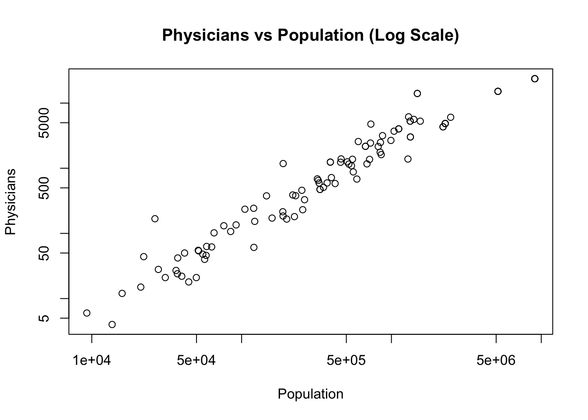
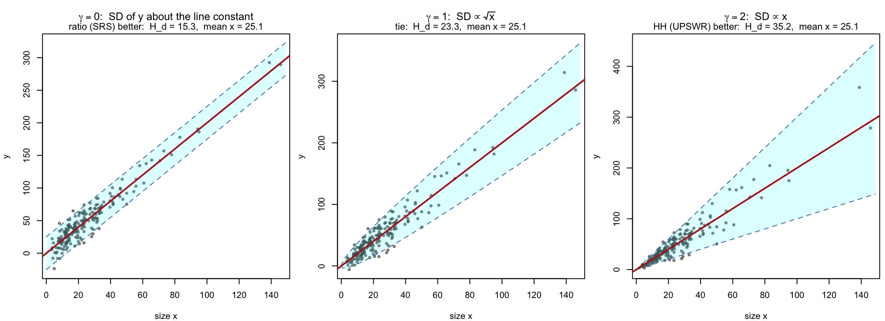
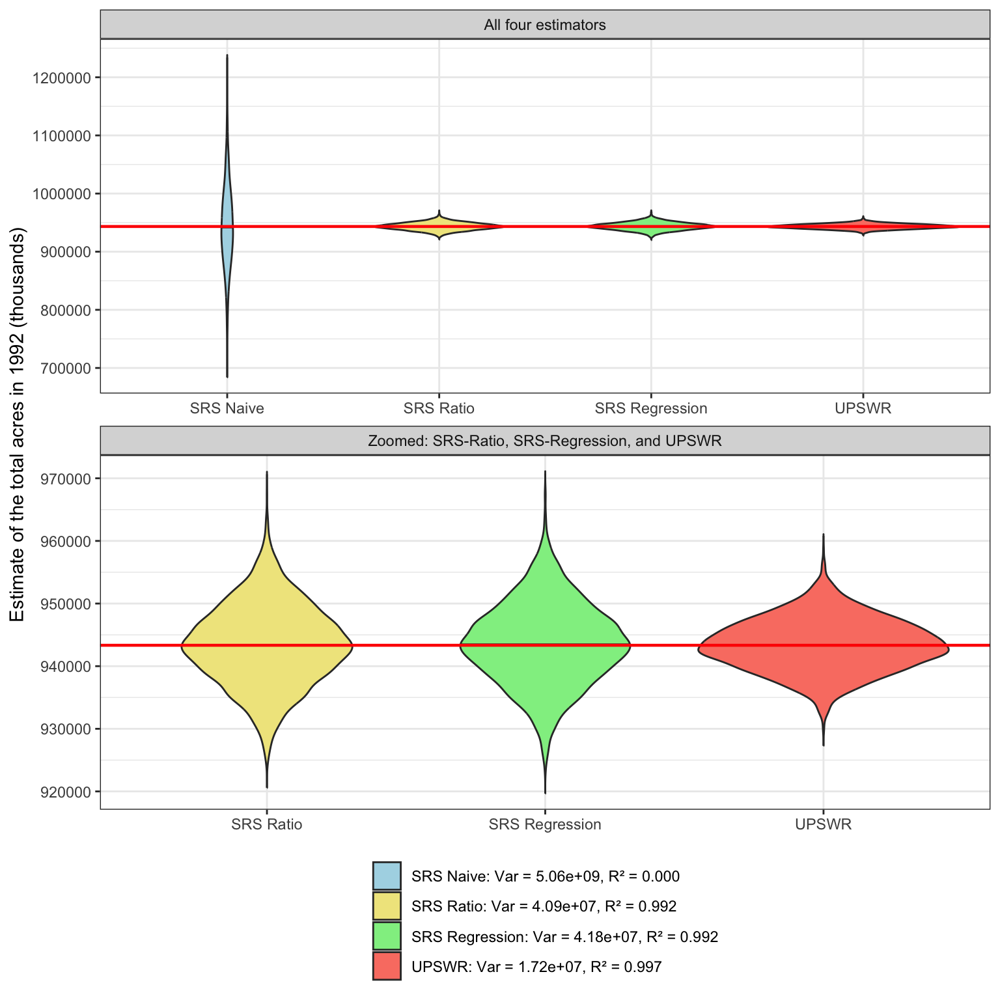
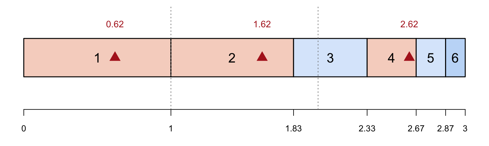
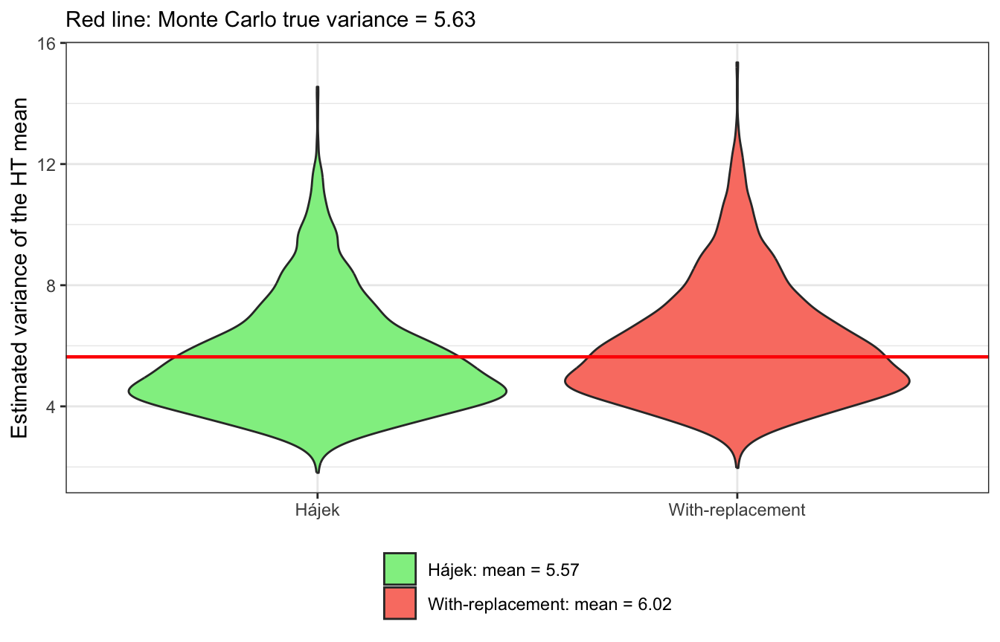
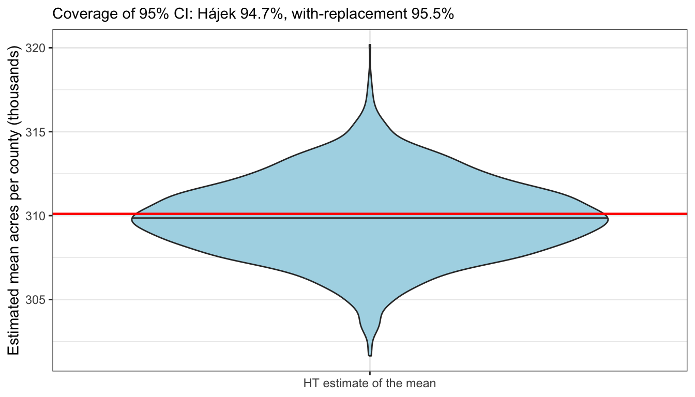

| Customer | \(x_i\) (million tokens) | \(\psi_i=x_i/t_x\) | \(y_i\) (revenue, $ thousand) | \(b_i=y_i/x_i\) |
|---|---|---|---|---|
| A | 2 | 0.02 | 11 | 5.5000 |
| B | 5 | 0.05 | 24 | 4.8000 |
| C | 8 | 0.08 | 41 | 5.1250 |
| D | 15 | 0.15 | 70 | 4.6667 |
| E | 30 | 0.30 | 155 | 5.1667 |
| F | 40 | 0.40 | 190 | 4.7500 |
| Total | 100 | 1.00 | 491 | |
| True \(B=\sum y_i/\sum x_i\) | 4.9100 |
7 Unequal Probability Sampling
Unequal probability sampling (UPS) selects units with different probabilities, usually in proportion to a size variable known for every unit in the population. Large units contribute more to a total, so we give them a larger chance of being selected, and correct for this in the estimator. This chapter builds UPS in three steps, each a special case or an extension of the previous one:
- The Hansen–Hurwitz (HH) estimator: the selection probabilities \(\psi_i\) are built from an auxiliary variable \(x_i\), and we estimate the total or mean of \(y_i\) (Section 7.2).
- One-stage cluster sampling: the units are clusters (psus), \(y_i\) is the cluster total \(t_i\), and \(x_i\) is the cluster size \(M_i\) (Section 7.4).
- Two-stage cluster sampling: the cluster total \(t_i\) is not observed, but estimated from a subsample of the cluster (Section 7.5).
Along the way, Section 7.3 compares the HH estimator with the sample average and the ratio estimator computed from a simple random sample of the same size.
Sampling with replacement (UPSWR) is used throughout, since it makes the variance easy to estimate: we make \(n\) independent draws, and on each draw unit \(i\) is selected with probability \(\psi_i\), where \(\sum_{i=1}^N\psi_i=1\). A unit may be selected more than once, and it then appears in the sample once per draw. Sampling without replacement is briefly discussed at the end (Section 7.6).
7.1 Functions and Packages
The estimating functions used throughout this book (in this chapter upswr_est and upswr_total for sampling with replacement, cluster_upswr for clusters sampled with replacement, upswo_est for sampling without replacement, srs_est, ratio_est and reg_est for comparison, and the format_est_gt table-formatting helper) live in a single shared file, samplingestimate.r, which we source below.
The full source of samplingestimate.r is listed in Appendix C.
7.2 The Hansen–Hurwitz Estimator
7.2.1 Theory
The population has \(N\) units. Unit \(i\) has a study value \(y_i\), with population total \(t=\sum_{i=1}^N y_i\) and mean \(\bar{y}_U=t/N\), and an auxiliary variable \(x_i>0\) whose total \(t_x=\sum_{i=1}^N x_i\) is known. If \(y_i\) is roughly proportional to \(x_i\) (for example, the number of physicians of a county and its population), we construct the selection probabilities from \(x_i\): \[ \psi_i=\frac{x_i}{t_x}. \]
The ratio of each unit. Define, for every unit of the population, \[ b_i=\frac{y_i}{x_i},\qquad i=1,\ldots,N, \] and let \(B=t/t_x=\bar{y}_U/\bar{x}_U\) be the population ratio. Since \(y_i=x_ib_i\), \(B\) is the mean of the \(b_i\) weighted by \(x_i\), \[ B=\frac{\sum_{i=1}^N x_ib_i}{\sum_{i=1}^N x_i}, \] and once \(B\) is known, the mean and the total follow, \[ \bar{y}_U=\bar{x}_U\,B,\qquad t=t_x\,B,\qquad \bar{x}_U=\frac{t_x}{N}. \] So estimating \(B\) is enough: we build an estimator \(\hat{B}\) and convert it to \(\hat{\bar{y}}=\bar{x}_U\hat{B}\) and \(\hat{t}=t_x\hat{B}\). Everything below, for HH, the ratio estimator and the sample average, is written in terms of the \(b_i\).
The sample \(\mathcal{R}\) and its observations \(b_j^*\). We make \(n\) independent draws with replacement; on each draw, unit \(i\) is selected with probability \(\psi_i=x_i/t_x\). The sample, denoted \(\mathcal{R}\) (not \(\mathcal{S}\)), is the list of the \(n\) draws including repeats: a unit drawn twice appears twice. Let \(b_j^*\) denote the ratio \(b\) of the unit selected on the \(j\)th draw, that is, the \(j\)th observation in \(\mathcal{R}\) (\(j=1,\ldots,n\)). The star reminds us that \(b_j^*\) is indexed by the draw, not by the population unit: \(b_j^*\) is random, while \(b_1,\ldots,b_N\) are fixed numbers.
Sampling distribution of \(b_j^*\). On every draw, \(b_j^*\) equals \(b_i\) exactly when unit \(i\) is selected, so \(b_j^*\) is a discrete random variable with distribution
| Unit selected on draw \(j\) | \(1\) | \(2\) | \(\cdots\) | \(N\) |
|---|---|---|---|---|
| Value of \(b_j^*\) | \(b_1\) | \(b_2\) | \(\cdots\) | \(b_N\) |
| Probability | \(\psi_1=x_1/t_x\) | \(\psi_2=x_2/t_x\) | \(\cdots\) | \(\psi_N=x_N/t_x\) |
(if several units have the same value of \(b_i\), their probabilities add up). Since the draws are made with replacement, the probabilities do not change from draw to draw, and \(b_1^*,\ldots,b_n^*\) are independent and identically distributed (iid) with this distribution. Its mean and variance are \[ E(b_j^*)=\sum_{i=1}^N\frac{x_i}{t_x}\cdot\frac{y_i}{x_i}=\frac{t}{t_x}=B,\qquad S_{b^*}^2=V(b_j^*)=\sum_{i=1}^N\psi_i\,(b_i-B)^2 . \] A single draw is therefore an unbiased estimate of \(B\), and it is a precise one when the \(b_i\) are nearly the same for all units, that is, when \(y_i\) is nearly proportional to \(x_i\).
Hansen–Hurwitz estimator of \(B\). The HH estimator is the average of the \(n\) observations in \(\mathcal{R}\), the mean of the ratios: \[ \boxed{\hat{B}_{\mathrm{HH}}=\bar{b}^*=\frac{1}{n}\sum_{j=1}^n b_j^*} . \] Being the mean of \(n\) iid copies of \(b_j^*\), it is unbiased, and its variance is that of one draw divided by \(n\): \[ E(\hat{B}_{\mathrm{HH}})=B,\qquad V(\hat{B}_{\mathrm{HH}})=\frac{S_{b^*}^2}{n}=\frac{1}{nN}\sum_{i=1}^N w^x_i\,(b_i-B)^2 , \qquad w^x_i=\frac{x_i}{\bar{x}_U}=N\psi_i . \] Here \(w^x_i\) is the size of unit \(i\) relative to the average, so that \(\psi_i=w^x_i/N\), and the variance is a sum of terms involving only \(w^x_i\) and \(b_i-B\). There is no finite population correction, since the draws are independent. For the same reason, the sample variance of the \(b_j^*\) is an unbiased estimate of \(S_{b^*}^2\), which gives \[ \boxed{\widehat{\mathrm{SE}}(\hat{B}_{\mathrm{HH}})=\frac{s_{b^*}}{\sqrt{n}}},\qquad s_{b^*}^2=\frac{1}{n-1}\sum_{j=1}^n\left(b_j^*-\bar{b}^*\right)^2 . \]
Mean and total. Multiplying by the known \(\bar{x}_U\) and \(t_x\), the estimator, its standard error and its estimated standard error all scale by the same constant: \[ \boxed{\; \begin{aligned} \hat{\bar{y}}_{\mathrm{HH}}&=\bar{x}_U\,\hat{B}_{\mathrm{HH}}=\bar{x}_U\,\bar{b}^*,\qquad &\mathrm{SE}(\hat{\bar{y}}_{\mathrm{HH}})&=\bar{x}_U\,\frac{S_{b^*}}{\sqrt{n}},\qquad &\widehat{\mathrm{SE}}(\hat{\bar{y}}_{\mathrm{HH}})&=\bar{x}_U\,\frac{s_{b^*}}{\sqrt{n}},\\[4pt] \hat{t}_{\mathrm{HH}}&=t_x\,\hat{B}_{\mathrm{HH}}=t_x\,\bar{b}^*,\qquad &\mathrm{SE}(\hat{t}_{\mathrm{HH}})&=t_x\,\frac{S_{b^*}}{\sqrt{n}},\qquad &\widehat{\mathrm{SE}}(\hat{t}_{\mathrm{HH}})&=t_x\,\frac{s_{b^*}}{\sqrt{n}} . \end{aligned}\;} \] Section 7.2.4 writes \(\hat{t}_{\mathrm{HH}}\) directly in terms of the selection probabilities \(\psi_i\).
Variance of the mean and total. The variances of \(\hat{\bar{y}}_{\mathrm{HH}}\) and \(\hat{t}_{\mathrm{HH}}\) are \(\bar{x}_U^2\) and \(t_x^2\) times \(V(\hat{B}_{\mathrm{HH}})\). The variance is small when all the ratios \(b_i\) are close to \(B\), that is, when \(y_i\) is nearly proportional to \(x_i\).
7.2.2 Computation Example: Revenue from AI Token Usage
An AI company has \(N=6\) enterprise customers. From its usage logs it knows, for every customer, the number of tokens \(x_i\) (in millions) the customer processed last month, but the revenue \(y_i\) (in thousands of dollars) that the customer generated has to be audited from the billing records, which is costly. Revenue is roughly proportional to token usage, so we draw \(n=5\) customers with replacement, with probabilities \(\psi_i=x_i/t_x\) proportional to the tokens, and estimate the revenue per million tokens \(B\), the mean revenue per customer \(\bar{y}_U\), and the total revenue \(t\).
The \(y_i\) and \(b_i\) columns are unknown to the company before the audit; they are shown here so that we can check the estimates. The largest customer F, with \(\psi_F=0.4\), is likely to be drawn more than once; in our sample it is drawn twice: \[ \mathcal{R}=\{F,\ E,\ F,\ D,\ C\}. \] Both copies of F are kept: each is a separate draw, so each is a separate observation \(b_j^*\). Only these customers are audited.
| Draw \(j\) | Customer | \(x_j^*\) | \(y_j^*\) | \(b_j^*=y_j^*/x_j^*\) | \(b_j^*-\bar{b}^*\) | \((b_j^*-\bar{b}^*)^2\) |
|---|---|---|---|---|---|---|
| 1 | F | 40 | 190 | 4.7500 | -0.1417 | 0.020069 |
| 2 | E | 30 | 155 | 5.1667 | 0.2750 | 0.075625 |
| 3 | F | 40 | 190 | 4.7500 | -0.1417 | 0.020069 |
| 4 | D | 15 | 70 | 4.6667 | -0.2250 | 0.050625 |
| 5 | C | 8 | 41 | 5.1250 | 0.2333 | 0.054444 |
| Sum | 24.4583 | 0.0000 | 0.220833 |
Step 1: HH estimate of \(B\), the mean of the ratios. From the column \(b_j^*\), \[ \hat{B}_{\mathrm{HH}}=\bar{b}^*=\frac{1}{5}\sum_{j=1}^5 b_j^*=\frac{24.4583}{5}=4.8917. \]
Step 2: the HH estimates of the mean and the total. Multiply by the known mean and total of the tokens, \(\bar{x}_U=16.667\) and \(t_x=100\): \[ \hat{\bar{y}}_{\mathrm{HH}}=\bar{x}_U\,\hat{B}_{\mathrm{HH}}=16.667\times 4.8917=81.53,\qquad \hat{t}_{\mathrm{HH}}=t_x\,\hat{B}_{\mathrm{HH}}=100\times 4.8917=489.2. \] The true values are \(B=4.91\), \(\bar{y}_U=81.83\) and \(t=491\).
Step 3: the sample variance of the ratios. From the last column, \[ s_{b^*}^2=\frac{1}{n-1}\sum_{j=1}^5\left(b_j^*-\bar{b}^*\right)^2=\frac{0.220833}{4} =0.055208,\qquad s_{b^*}=0.23496. \]
Step 4: the estimated standard errors. \[ \begin{aligned} \widehat{\mathrm{SE}}(\hat{B}_{\mathrm{HH}})&=\frac{s_{b^*}}{\sqrt{n}}=0.10508,\\ \widehat{\mathrm{SE}}(\hat{\bar{y}}_{\mathrm{HH}})&=\bar{x}_U\,\frac{s_{b^*}}{\sqrt{n}} =16.667\times0.10508=1.75,\\ \widehat{\mathrm{SE}}(\hat{t}_{\mathrm{HH}})&=t_x\,\frac{s_{b^*}}{\sqrt{n}}=100\times0.10508=10.5. \end{aligned} \] For comparison, the theoretical standard error is \(\mathrm{SE}(\hat{B}_{\mathrm{HH}})=\sqrt{S_{b^*}^2/n}=\sqrt{0.05015/5}=0.10015\), that is, \(\mathrm{SE}(\hat{\bar{y}}_{\mathrm{HH}})=1.67\). The estimate \(81.53\) is \(0.17\) estimated standard errors below \(\bar{y}_U=81.83\).
The same HH estimates from the shared function upswr_est (Section 7.2.3 uses it for real data). The audited sample is stored as a data set token, with one row per draw (customer F appears twice) and columns y (revenue) and x (tokens). upswr_est takes these two columns and the population mean and total of \(x\), passed as xbar_pop \(=\bar{x}_U=t_x/N=100/6\) and tx_pop \(=t_x=100\):
Code
token <- data.frame(y = c(190, 155, 190, 70, 41), # draws F, E, F, D, C
x = c(40, 30, 40, 15, 8))
tokenCode
upswr_est(token$y, token$x, xbar_pop = 100 / 6, tx_pop = 100, method = "ratio", show.details = FALSE)$estimate |>
format_est_gt("hh_B")| \(\hat{B}_{\mathrm{HH}}\) | \(\mathrm{SE}(\hat{B}_{\mathrm{HH}})\) | 95% CI Lower | 95% CI Upper |
|---|---|---|---|
| 4.89 | 0.11 | 4.60 | 5.18 |
Code
upswr_est(token$y, token$x, xbar_pop = 100 / 6, tx_pop = 100, method = "mean", show.details = FALSE)$estimate |>
format_est_gt("hh_ybar")| \(\hat{\bar{y}}_{\mathrm{HH}}\) | \(\mathrm{SE}(\hat{\bar{y}}_{\mathrm{HH}})\) | 95% CI Lower | 95% CI Upper |
|---|---|---|---|
| 81.53 | 1.75 | 76.67 | 86.39 |
Code
upswr_est(token$y, token$x, xbar_pop = 100 / 6, tx_pop = 100, method = "total", show.details = FALSE)$estimate |>
format_est_gt("hh_total")| \(\hat{t}_{\mathrm{HH}}\) | \(\mathrm{SE}(\hat{t}_{\mathrm{HH}})\) | 95% CI Lower | 95% CI Upper |
|---|---|---|---|
| 489.17 | 10.51 | 459.99 | 518.34 |
7.2.3 Example: Physicians in U.S. Counties (statepop.csv)
The file statepop.csv contains data from an unequal-probability sample of 100 U.S. counties. Counties were chosen with probabilities proportional to their populations, \(\psi_i=x_i/t_x\) with \(x_i\) the population of county \(i\) and \(t_x=255{,}077{,}536\) the population of the US. We want to estimate the total number of physicians \(t\) in the US. Because sampling was done with replacement, large counties like Los Angeles occur multiple times in the sample.
The number of physicians is roughly proportional to the population, which is why this is a good size variable:

All three estimates come from the same quantity, the ratio \(b_j^*=\mathrm{phys}_j^*/\mathrm{popn}_j^*\) of physicians per person of the county selected on draw \(j\). To avoid tiny numbers we measure the population in thousands of people, so that \(b_j^*\) is the number of physicians per 1,000 people. The function upswr_est takes the physicians and populations of the 100 draws, the population mean and total of \(x\) (the number of counties is \(N=3141\), so \(\bar{x}_U=t_x/N\)), and the method.
Physicians per 1,000 people, \(\hat{B}_{\mathrm{HH}}=\bar{b}^*\). The working table lists the ratios \(b_j^*\) of the first draws, their deviations from \(\hat{B}_{\mathrm{HH}}\), and the squared deviations, whose sum gives \(s_{b^*}^2\):
Code
N <- 3141 # counties in the US
popn_in_thousands <- popn / 1000 # county populations in thousands
popn_US_in_thousands <- popn_US / 1000
res_phys_ratio_hh <- upswr_est(phys, popn_in_thousands, xbar_pop = popn_US_in_thousands / N,
tx_pop = popn_US_in_thousands, method = "ratio")
res_phys_ratio_hh$table| UPSWR Hansen-Hurwitz Estimation: Working Table | ||||
| \(n = 100\) | ||||
| \(i\) | \(b_j^*\) | \(\hat B_{\mathrm{HH}}\) | \(b_j^*-\hat B_{\mathrm{HH}}\) | \((b_j^*-\hat B_{\mathrm{HH}})^2\)1 |
|---|---|---|---|---|
| 1 | 0.29 | 2.24 | −1.94 | 3.78 |
| 2 | 1.96 | 2.24 | −0.28 | 0.08 |
| 3 | 1.96 | 2.24 | −0.28 | 0.08 |
| 4 | 0.51 | 2.24 | −1.73 | 3.00 |
| 5 | 1.72 | 2.24 | −0.51 | 0.26 |
| 6 | 0.87 | 2.24 | −1.36 | 1.86 |
| ... | ... | ... | ... | ... |
| Sum | 223.58 | 2.24 | 0.00 | 260.81 |
| 1 \(s_{b^*}^2 = \sum_i (b_j^*-\hat B_{\mathrm{HH}})^2/(n-1) = 2.63\). | ||||
| \(\hat B_{\mathrm{HH}} = \dfrac{\sum_i b_j^*}{n} = \dfrac{223.58}{100} = 2.24\) | ||||
| \(\mathrm{SE}(\hat B_{\mathrm{HH}}) = \dfrac{s_{b^*}}{\sqrt n} = \dfrac{1.62}{\sqrt{100}} = 0.16\) | ||||
Code
res_phys_ratio_hh$estimate |> format_est_gt("hh_B")| \(\hat{B}_{\mathrm{HH}}\) | \(\mathrm{SE}(\hat{B}_{\mathrm{HH}})\) | 95% CI Lower | 95% CI Upper |
|---|---|---|---|
| 2.24 | 0.16 | 1.91 | 2.56 |
Output Note: Each draw gives an unbiased estimate of the national number of physicians per 1,000 people, and their average is \(\hat{B}_{\mathrm{HH}}=2.236\) physicians per 1,000 people, with a 95% interval of [1.914, 2.558].
Physicians per county, \(\hat{\bar{y}}_{\mathrm{HH}}=\bar{x}_U\hat{B}_{\mathrm{HH}}\), with \(\bar{x}_U=t_x/N\) the average population of a county:
Code
res_phys_county <- upswr_est(phys, popn_in_thousands, xbar_pop = popn_US_in_thousands / N, tx_pop = popn_US_in_thousands,
method = "mean", show.details = FALSE)
res_phys_county$estimate |> format_est_gt("hh_ybar")| \(\hat{\bar{y}}_{\mathrm{HH}}\) | \(\mathrm{SE}(\hat{\bar{y}}_{\mathrm{HH}})\) | 95% CI Lower | 95% CI Upper |
|---|---|---|---|
| 181.57 | 13.18 | 155.41 | 207.72 |
Output Note: This is the estimate per 1,000 people times the average county population in thousands, \(\bar{x}_U=81.2\), and its standard error is multiplied by the same factor. It averages over counties, each weighted equally, so the many small rural counties pull it down to about 182 physicians per county.
Total physicians in the US, \(\hat{t}_{\mathrm{HH}}=t_x\hat{B}_{\mathrm{HH}}\), with \(t_x\) the US population (in thousands):
Code
res_phys_total <- upswr_est(phys, popn_in_thousands, xbar_pop = popn_US_in_thousands / N, tx_pop = popn_US_in_thousands,
method = "total", show.details = FALSE)
res_phys_total$estimate |> format_est_gt("hh_total")| \(\hat{t}_{\mathrm{HH}}\) | \(\mathrm{SE}(\hat{t}_{\mathrm{HH}})\) | 95% CI Lower | 95% CI Upper |
|---|---|---|---|
| 570,304.30 | 41,401.23 | 488,155.27 | 652,453.32 |
The same total with the normalized size \(\tilde{x}_i=\psi_i\) (Section 7.2.4), with \(t_{\tilde{x}}=1\); the population need not be in thousands now, since \(\psi_i\) has no units:
Code
upswr_est(phys, psi, show.details = FALSE)$estimate |>
format_est_gt("hh_total")| \(\hat{t}_{\mathrm{HH}}\) | \(\mathrm{SE}(\hat{t}_{\mathrm{HH}})\) | 95% CI Lower | 95% CI Upper |
|---|---|---|---|
| 570,304.30 | 41,401.23 | 488,155.27 | 652,453.32 |
Output Note: This is the estimate per 1,000 people times the US population in thousands, so it estimates the national total number of physicians: about 570,304 physicians in the US, with a 95% interval of [488,155, 652,453]. The three estimates carry the same information: the standard errors are in the same proportion as the estimates.
Comparison with estimates based on an SRS sample
Let’s compare our UPSWR results against estimates based on a Simple Random Sample of 100 counties, including the ratio estimator that uses the county population at the estimation stage.
Code
# Read SRS sample, treating -99 as NA
counties <- read.csv("data/counties.csv", na.strings = "-99")
totpop <- 255077536
N <- 3141 # Total number of counties
# 1. Naive SRS estimate for total
res_counties_srs <- srs_est(counties$physician, N = N, estimate = "total", show.details = FALSE)
res_counties_srs$estimate |> format_est_gt("total")| \(\hat{t}\) | \(\mathrm{SE}(\hat{t})\) | 95% CI Lower | 95% CI Upper |
|---|---|---|---|
| 933,410.97 | 491,982.79 | −42,789.62 | 1,909,611.56 |
Code
# 2. Ratio estimate for total using SRS data
res_counties_ratio <- ratio_est(counties$physician, counties$totpop, xbarU = totpop/N, N = N, estimate = "total")
res_counties_ratio$table| Ratio Estimation: Working Table | |||||
| \(n = 100\) | |||||
| \(i\) | \(y_i\) | \(x_i\) | \(\hat y_i\)1 | \(e_i\) | \(e_i^2\) |
|---|---|---|---|---|---|
| 1 | 24.00 | 36,023.00 | 90.31 | −66.31 | 4,397.47 |
| 2 | 44.00 | 73,524.00 | 184.33 | −140.33 | 19,693.17 |
| 3 | 7.00 | 6,408.00 | 16.07 | −9.07 | 82.18 |
| 4 | 11.00 | 19,261.00 | 48.29 | −37.29 | 1,390.49 |
| 5 | 3.00 | 7,649.00 | 19.18 | −16.18 | 261.69 |
| 6 | 327.00 | 188,377.00 | 472.28 | −145.28 | 21,106.52 |
| ... | ... | ... | ... | ... | ... |
| Sum | 29,717.00 | 11,853,116.00 | 29,717.00 | 0.00 | 17,054,519.52 |
| 1 \(\hat B = \sum_i y_i / \sum_i x_i = 0.00\), \(\hat y_i = \hat B\, x_i\), \(s_e^2 = 1.72 \times 10^{5}\). | |||||
| \(\hat t = \hat B\,\bar x_U\,N = 0.00 \times 81,209.02 \times 3,141 = 6.40 \times 10^{5}\) | |||||
| \(\mathrm{SE}(\hat t) = \mathrm{SE}(\hat B)\,\bar x_U\,N = 3.45 \times 10^{-4} \times 81,209.02 \times 3,141 = 87,885.27\) | |||||
Code
res_counties_ratio$estimate |> format_est_gt("total")| \(\hat{t}\) | \(\mathrm{SE}(\hat{t})\) | 95% CI Lower | 95% CI Upper |
|---|---|---|---|
| 639,506.03 | 87,885.27 | 465,122.60 | 813,889.46 |
Code
# 3. Regression estimate for total using SRS data
res_counties_reg <- reg_est(counties$physician, counties$totpop, xbarU = totpop/N, N = N, estimate = "total")
res_counties_reg$table| Regression Estimation: Working Table | |||||
| \(n = 100\) | |||||
| \(i\) | \(y_i\) | \(x_i\) | \(\hat y_i\)1 | \(e_i\) | \(e_i^2\) |
|---|---|---|---|---|---|
| 1 | 24.00 | 36,023.00 | 52.56 | −28.56 | 815.88 |
| 2 | 44.00 | 73,524.00 | 163.74 | −119.74 | 14,337.75 |
| 3 | 7.00 | 6,408.00 | −35.23 | 42.23 | 1,783.70 |
| 4 | 11.00 | 19,261.00 | 2.87 | 8.13 | 66.09 |
| 5 | 3.00 | 7,649.00 | −31.55 | 34.55 | 1,194.03 |
| 6 | 327.00 | 188,377.00 | 504.24 | −177.24 | 31,413.03 |
| ... | ... | ... | ... | ... | ... |
| Sum | 29,717.00 | 11,853,116.00 | 29,717.00 | 0.00 | 11,349,761.43 |
| 1 \(\hat B_0 = -54.23\), \(\hat B_1 = 0.00\), \(\hat y_i = \hat B_0 + \hat B_1 x_i\), \(s_e^2 = 1.16 \times 10^{5}\). | |||||
| \(\hat t_{reg} = N\bar y_{reg} = 3,141 \times 186.52 = 5.86 \times 10^{5}\) | |||||
| \(\mathrm{SE}(\hat t_{reg}) = N\times\mathrm{SE}(\bar y_{reg}) = 3,141 \times 33.49 = 1.05 \times 10^{5}\) | |||||
Code
res_counties_reg$estimate |> format_est_gt("reg_total")| \(\hat{t}_{reg}\) | \(\mathrm{SE}(\hat{t}_{reg})\) | 95% CI Lower | 95% CI Upper |
|---|---|---|---|
| 585,870.60 | 105,177.42 | 377,149.44 | 794,591.76 |
Output Note: The true value is 532,638. Notice how poorly the naive SRS estimate performs (predicting over 800,000) because it ignores county sizes. Both the SRS Ratio and SRS Regression methods perform much better by incorporating auxiliary population data, as does the HH estimator above, which uses the county sizes at the design stage.
Summary. The estimates of the total number of physicians in the US from all the methods above:
| Method | Estimate | SE | 95% CI lower | 95% CI upper | Estimate \(-\) true |
|---|---|---|---|---|---|
| Sample total, \(N\bar{y}\) (SRS) | 933,411 | 491,983 | -42,790 | 1,909,612 | 400,773 |
| Ratio estimator (SRS) | 639,506 | 87,885 | 465,123 | 813,889 | 106,868 |
| Regression estimator (SRS) | 585,871 | 105,177 | 377,149 | 794,592 | 53,233 |
| Hansen–Hurwitz, \(t_x\hat{B}_{\mathrm{HH}}\) (UPSWR) | 570,304 | 41,401 | 488,155 | 652,453 | 37,666 |
The naive SRS total ignores the county sizes: it is far too large, with a huge SE. The ratio and regression estimators use the county populations at the estimation stage and have much smaller SEs, and HH, which uses them at the design stage, has the smallest SE and the smallest error here, even though its sample is of the same size, 100 counties. Section 7.3 explains when using the size variable at the design stage pays off.
7.2.4 The HH Estimator of the Total in Terms of \(\psi_i\)
The selection probabilities need not come from a size variable: any \(\psi_i>0\) with \(\sum_{i=1}^N\psi_i=1\) define a UPSWR design. Let \(y_j^*\) and \(\psi_j^*\) be the study value and the selection probability of the unit selected on draw \(j\). Dividing \(y_j^*\) by its selection probability gives an estimate of the total from that draw alone, \[
u_j=\frac{y_j^*}{\psi_j^*},\qquad
E(u_j)=\sum_{i=1}^N\psi_i\,\frac{y_i}{\psi_i}=\sum_{i=1}^N y_i=t ,
\] and the \(u_j\) are iid, since the draws are independent. The HH estimator of the total is their average: \[
\boxed{\hat{t}_{\mathrm{HH}}=\bar u=\frac1n\sum_{j=1}^n\frac{y_j^*}{\psi_j^*},\qquad
\widehat{\mathrm{SE}}(\hat{t}_{\mathrm{HH}})=\frac{s_u}{\sqrt n},\qquad
s_u^2=\frac{1}{n-1}\sum_{j=1}^n\left(\frac{y_j^*}{\psi_j^*}-\hat{t}_{\mathrm{HH}}\right)^2},
\] with variance \[
V(\hat{t}_{\mathrm{HH}})=\frac1n\sum_{i=1}^N\psi_i\left(\frac{y_i}{\psi_i}-t\right)^2 .
\] The mean is estimated by \(\hat{t}_{\mathrm{HH}}/N\). A unit with a small \(\psi_i\) is rarely drawn, but when it is, its value is multiplied by the large factor \(1/\psi_i\); this is what makes \(u_j\) unbiased. This form is what the function upswr_total computes.
Equivalence with \(\hat{B}_{\mathrm{HH}}\). The formula is the estimator of Section 7.2.1 with the selection probabilities themselves as the size variable. Take the normalized size \[ \tilde{x}_i=\psi_i,\qquad\text{so that}\qquad t_{\tilde{x}}=\sum_{i=1}^N\tilde{x}_i=1 \quad\text{and}\quad \frac{\tilde{x}_i}{t_{\tilde{x}}}=\psi_i . \] The ratios and the population ratio for this size variable are \[ \tilde{b}_i=\frac{y_i}{\tilde{x}_i}=\frac{y_i}{\psi_i},\qquad \tilde{B}=\frac{t}{t_{\tilde{x}}}=t , \] so each observation \(\tilde{b}_j^*=y_j^*/\psi_j^*=u_j\), and \[ \hat{\tilde{B}}_{\mathrm{HH}}=\frac1n\sum_{j=1}^n\tilde{b}_j^*=\hat{t}_{\mathrm{HH}},\qquad \hat{t}_{\mathrm{HH}}=t_{\tilde{x}}\,\hat{\tilde{B}}_{\mathrm{HH}}=\hat{\tilde{B}}_{\mathrm{HH}},\qquad s_{\tilde{b}^*}=s_u . \] With a normalized size, the “ratio” \(\tilde{B}\) is the total, and the estimator, its SE and its variance are those of Section 7.2.1. Conversely, when \(\psi_i=x_i/t_x\), every draw gives \(y_j^*/\psi_j^*=t_x\,y_j^*/x_j^*=t_x\,b_j^*\), so \(\hat{t}_{\mathrm{HH}}=t_x\,\bar{b}^*\) and \(s_u=t_x\,s_{b^*}\), the formulas for the total in Section 7.2.1. Rescaling a size variable to total 1 therefore does not change the estimator of the total, since \(\psi_i\) depends on \(x_i\) only through \(x_i/t_x\).
7.2.4.1 Example: Revenue from AI Token Usage, Using \(\psi_i\)
We repeat the AI token example of Section 7.2.2 with the formula in terms of \(\psi_i\). The same sample \(\mathcal{R}=\{F,E,F,D,C\}\) is used, but each draw now gives an estimate \(u_j=y_j^*/\psi_j^*\) of the total revenue, and the HH estimate is their average.
| Draw \(j\) | Customer | \(y_j^*\) | \(\psi_j^*\) | \(u_j=y_j^*/\psi_j^*\) | \(u_j-\hat{t}_{\mathrm{HH}}\) | \((u_j-\hat{t}_{\mathrm{HH}})^2\) |
|---|---|---|---|---|---|---|
| 1 | F | 190 | 0.40 | 475.0 | -14.2 | 200.7 |
| 2 | E | 155 | 0.30 | 516.7 | 27.5 | 756.3 |
| 3 | F | 190 | 0.40 | 475.0 | -14.2 | 200.7 |
| 4 | D | 70 | 0.15 | 466.7 | -22.5 | 506.2 |
| 5 | C | 41 | 0.08 | 512.5 | 23.3 | 544.4 |
| Sum | 2,445.8 | 0.0 | 2,208.3 |
Step 1: HH estimate of the total. \[ \hat{t}_{\mathrm{HH}}=\bar{u}=\frac1n\sum_{j=1}^n\frac{y_j^*}{\psi_j^*}=\frac{2445.8}{5}=489.2, \] the same as \(t_x\hat{B}_{\mathrm{HH}}=489.2\) in Section 7.2.2.
Step 2: its standard error. From the last column, \[ s_u^2=\frac{1}{n-1}\sum_{j=1}^5\left(u_j-\hat{t}_{\mathrm{HH}}\right)^2=\frac{2208.3}{4} =552.1,\qquad \widehat{\mathrm{SE}}(\hat{t}_{\mathrm{HH}})=\frac{s_u}{\sqrt{n}}=10.5, \] again equal to \(t_x\,s_{b^*}/\sqrt{n}=10.5\) (here \(u_j=t_x\,b_j^*\)).
Step 3: the mean and \(B\). Divide by \(N\) and by \(t_x\): \(\hat{\bar{y}}_{\mathrm{HH}}=\hat{t}_{\mathrm{HH}}/N=81.53\) and \(\hat{B}_{\mathrm{HH}}=\hat{t}_{\mathrm{HH}}/t_x=4.8917\).
The same estimates from upswr_est, with the normalized size \(\tilde{x}_i=\psi_i\) of Section 7.2.4, whose total is \(t_{\tilde{x}}=1\): the ratios are the \(u_j\), and their mean \(\hat{\tilde{B}}_{\mathrm{HH}}\) is \(\hat{t}_{\mathrm{HH}}\) itself. So xbar_pop and tx_pop are left out, and the call returns the estimate of the total; the estimates of \(\bar{y}_U\) and \(B\) follow by dividing the estimate and its SE by \(N=6\) and by \(t_x=100\):
Code
token$psi <- token$x / 100 # psi_i = x_i / t_x
t_hat <- upswr_est(token$y, token$psi, show.details = FALSE)$estimate # estimate of t
t_hat |> format_est_gt("hh_total")| \(\hat{t}_{\mathrm{HH}}\) | \(\mathrm{SE}(\hat{t}_{\mathrm{HH}})\) | 95% CI Lower | 95% CI Upper |
|---|---|---|---|
| 489.17 | 10.51 | 459.99 | 518.34 |
Code
(t_hat / 6) |> format_est_gt("hh_ybar") # mean y: divide by N| \(\hat{\bar{y}}_{\mathrm{HH}}\) | \(\mathrm{SE}(\hat{\bar{y}}_{\mathrm{HH}})\) | 95% CI Lower | 95% CI Upper |
|---|---|---|---|
| 81.53 | 1.75 | 76.67 | 86.39 |
Code
(t_hat / 100) |> format_est_gt("hh_B") # B: divide by t_x| \(\hat{B}_{\mathrm{HH}}\) | \(\mathrm{SE}(\hat{B}_{\mathrm{HH}})\) | 95% CI Lower | 95% CI Upper |
|---|---|---|---|
| 4.89 | 0.11 | 4.60 | 5.18 |
7.3 Comparison of the HH, Ratio, and Average Estimators of the Total
The HH estimator uses the size variable \(x_i\) at the design stage, through the selection probabilities \(\psi_i\). With a simple random sample, the same information can instead be used at the estimation stage, by the ratio estimator, or ignored, by the sample average. This section compares the three estimators of the total \(t\): their variances, a toy example in which each of them can win, a simulation with the agpop data, and an app.
7.3.1 Theory
The sample average and the ratio estimator use a simple random sample (SRS) \(\mathcal{S}\) of \(n\) units drawn without replacement; HH uses \(n\) draws with replacement, with selection probabilities \(\psi_i=x_i/t_x\). The ratio estimator and HH are best compared through the residuals about the line through the origin, \[ d_i=y_i-Bx_i,\qquad B=\frac{t}{t_x},\qquad \sum_{i=1}^N d_i=t-Bt_x=0 . \]
- The sample average ignores \(x_i\): \(\hat{t}_{\mathrm{avg}}=N\bar{y}\), with the SRS variance \[ V(\hat{t}_{\mathrm{avg}})=\left(1-\frac nN\right)\frac{N^2S_y^2}{n},\qquad S_y^2=\frac{1}{N-1}\sum_{i=1}^N\left(y_i-\bar{y}_U\right)^2 . \]
- The ratio estimator (Section 5.3.1) is \(\hat{t}_r=t_x\,\bar{y}/\bar{x}\), and its (large-\(n\)) variance is the SRS variance of the residuals, \(\left(1-\frac nN\right)N^2S_d^2/n\) with \(S_d^2=\frac{1}{N-1}\sum_{i=1}^N d_i^2\). Since an SRS gives every unit the same selection probability \(1/N\), it can be written in the same form as the HH variance below: \[ V(\hat{t}_r)\approx\left(1-\frac nN\right)\frac{N}{N-1}\cdot\frac1n\sum_{i=1}^N\frac{d_i^2}{1/N} \approx\left(1-\frac nN\right)\frac1n\sum_{i=1}^N\frac{d_i^2}{1/N}. \]
- The HH estimator is \(\hat{t}_{\mathrm{HH}}=\frac1n\sum_{j=1}^n y_j^*/\psi_j^*\) (Section 7.2.4), with variance \(\frac1n\sum_{i=1}^N\psi_i\left(y_i/\psi_i-t\right)^2\). With \(\psi_i=x_i/t_x\), each one-draw deviation is a scaled residual, \[ \frac{y_i}{\psi_i}-t=\frac{t_x}{x_i}\left(y_i-\frac{t}{t_x}\,x_i\right)=\frac{d_i}{\psi_i}, \qquad\text{so}\qquad V(\hat{t}_{\mathrm{HH}})=\frac1n\sum_{i=1}^N\frac{d_i^2}{\psi_i}. \]
| Estimator | Estimator of \(t\) | Variance | \(x_i\) is used at | Unbiased? |
|---|---|---|---|---|
| Sample average (SRS) | \(\hat{t}_{\mathrm{avg}}=N\bar{y}\) | \(\left(1-\dfrac{n}{N}\right)\dfrac{N^2S_y^2}{n}\) | not used | yes |
| Ratio (SRS) | \(\hat{t}_r=t_x\,\dfrac{\bar{y}}{\bar{x}}\) | \(\approx\left(1-\dfrac{n}{N}\right)\dfrac{1}{n}\sum\limits_{i=1}^N \dfrac{d_i^2}{1/N}\) | the estimation stage | slightly biased |
| HH (UPSWR) | \(\hat{t}_{\mathrm{HH}}=\dfrac1n\sum\limits_{j=1}^n \dfrac{y_j^*}{\psi_j^*}\) | \(\dfrac{1}{n}\sum\limits_{i=1}^N \dfrac{d_i^2}{\psi_i}\) | the design stage, \(\psi_i=x_i/t_x\) | exactly unbiased |
For the mean, divide the estimators by \(N\) and the variances by \(N^2\); for \(B=t/t_x\), divide by \(t_x\) and \(t_x^2\).
On a common scale. The ratio and HH variances differ only in the selection probability that divides \(d_i^2\): \(1/N\) for every unit in an SRS, \(\psi_i\) under UPSWR. Writing the sample average the same way, \(N^2S_y^2/n\approx\frac1n\sum_{i=1}^N(y_i-\bar{y}_U)^2/(1/N)\), and ignoring the finite population correction, each variance is \(\frac1n\) times a sum over the units of one term, a squared deviation divided by the unit’s selection probability:
| Estimator | Term of unit \(i\) | Same, as \(N\times\) (squared deviation) / (relative size) | Spread of \(y\) about |
|---|---|---|---|
| Sample average | \(\dfrac{(y_i-\bar{y}_U)^2}{1/N}\) | \(\dfrac{N(y_i-\bar{y}_U)^2}{1}\) | the flat line \(\bar{y}_U\) |
| Ratio | \(\dfrac{d_i^2}{1/N}\) | \(\dfrac{N\,d_i^2}{1}\) | the line \(y=Bx\) |
| HH | \(\dfrac{d_i^2}{\psi_i}\) | \(\dfrac{N\,d_i^2}{x_i/\bar{x}_U}=\dfrac{N\,d_i^2}{w^x_i}\) | the line \(y=Bx\) |
Because \(\psi_i=x_i/t_x=\frac1N\,x_i/\bar{x}_U\), the last column shows the contrast most directly: the three terms share the factor \(N\) and differ only in what divides the squared deviation, namely \(1\) for the two SRS estimators and the relative size \(w^x_i=x_i/\bar{x}_U\) for HH.
Ratio versus average. Since \(y_i-\bar{y}_U=d_i+B(x_i-\bar{x}_U)\), the two terms differ by \(B(x_i-\bar{x}_U)\). When \(y_i\) is roughly proportional to \(x_i\), the residuals \(d_i\) are small and the spread of \(y\) comes mostly from that of \(x\), which the ratio estimator removes. When \(y_i\) is not related to \(x_i\), the residual \(d_i=(y_i-\bar{y}_U)-B(x_i-\bar{x}_U)\) adds the spread of \(x\) to that of \(y\), and the sample average does better.
HH versus ratio. Both use the same squared residuals \(d_i^2\); they differ only in what they are divided by, the equal probability \(1/N\) for the ratio estimator and \(\psi_i\) for HH. A unit larger than average (\(\psi_i>1/N\)) has its residual downweighted under HH, and a smaller one upweighted. The reason is that HH gives equal weights to the draws because the large units are already drawn more often, whereas the SRS estimators give every unit the same chance. UPSWR therefore wins when the large residuals \(d_i\) belong to the large units, that is, when the spread of \(y_i\) about the line grows with \(x_i\), as it does for county acreages. When the spread of \(y_i\) is the same for all \(x_i\), the SRS ratio estimator does better, and when \(y_i\) is not related to \(x_i\) at all, all the \(d_i\) are large and both can be worse than the plain sample average. The toy example in Section 7.3.2 illustrates these cases.
When does UPS beat the ratio estimator? Ignoring the finite population correction, the difference of the two variances is a single sum, \[ V(\hat{t}_r)-V(\hat{t}_{\mathrm{HH}})\approx\frac1n\sum_{i=1}^N d_i^2\left(N-\frac{1}{\psi_i}\right) =\frac Nn\sum_{i=1}^N d_i^2\left(1-\frac{\bar{x}_U}{x_i}\right), \] so HH has the smaller variance exactly when \[ \boxed{H_d=\frac{\sum_{i=1}^N d_i^2}{\sum_{i=1}^N d_i^2/x_i}>\bar{x}_U}, \] that is, when the harmonic mean of the sizes, weighted by the squared residuals, exceeds their ordinary mean: the units with large residuals are larger than average. In terms of the features of the population, suppose the spread of \(y\) about the line \(y=Bx\) grows like a power of the size, \(d_i^2\approx\sigma^2x_i^{\gamma}\). Then the sum above is proportional to \(\sum_i x_i^{\gamma-1}(x_i-\bar{x}_U)\), a multiple of the covariance of \(x_i^{\gamma-1}\) with \(x_i\), whose sign is that of \(\gamma-1\):
| Spread of \(y\) about the line \(y=Bx\) | \(\gamma\) | Better estimator |
|---|---|---|
| Constant: \(\mathrm{SD}(d_i)\) does not depend on \(x_i\) | \(0\) | ratio (SRS) |
| \(\mathrm{SD}(d_i)\propto\sqrt{x_i}\): \(V(y_i)\propto x_i\), as for sums of \(x_i\) independent pieces | \(1\) | tie |
| \(\mathrm{SD}(d_i)\propto x_i\): a constant coefficient of variation, \(\mathrm{SD}(y_i)\propto Bx_i\) | \(2\) | HH (UPSWR) |
Figure 7.2 shows the three cases for one skewed population of sizes, with the same line \(y=Bx\) and the same average spread about it; only the way the spread grows with \(x\) differs.

Many skewed populations with a natural size, such as revenues by customer size, acreages by county area, or counts by population, have a roughly constant coefficient of variation (\(\gamma\approx2\)), which is why PPS works well for them. A plot of \(y\) against \(x\) from a census or a pilot sample shows which case applies: if the scatter about the line fans out in proportion to \(x\), sample with PPS; if its width stays about the same, use an SRS with the ratio estimator. Three further points favour the SRS ratio estimator: its finite population correction \(1-n/N\), which matters when the sampling fraction is large; the repeated units of sampling with replacement (a \(\pi\)ps design without replacement, Section 7.6, removes this); and a line with an intercept, when \(y\) is not proportional to \(x\), where both rely on the wrong line and the regression estimator with an SRS is safer. In the toy example, \(H_d\) is 529 for the first population and 423 for the second, both above \(\bar{x}_U=400\), so HH beats the ratio estimator in both, as the working tables below confirm.
7.3.2 Toy Example: Four Supermarkets
A town has four supermarkets, with floor areas \(x_i\) from \(100\,\text{m}^2\) to \(1000\,\text{m}^2\), so \(t_x=1600\), and the selection probabilities are \(\psi_i=x_i/t_x=0.0625,\,0.125,\,0.1875,\,0.625\), against \(1/N=0.25\) for each store in an SRS. We want to estimate the total monthly sales \(t\) of the four stores; \(B=t/t_x\) is the sales per square metre, and the line \(y=Bx\) gives the residuals \(d_i=y_i-Bx_i\).
To compare the three estimators of \(t\) in Section 7.3, we work out their variances for a single draw (\(n=1\)); for \(n\) draws, each is divided by \(n\). For the two SRS estimators we ignore the finite population correction, so a single draw has the variance of one value drawn with equal probabilities \(1/N\) (hence the divisor \(N\) rather than \(N-1\)). The one-draw variance of each estimator is the sum over the stores of its term:
| Estimator | Design | Term of store \(i\) |
|---|---|---|
| Sample average | SRS | \(N(y_i-\bar{y}_U)^2\) |
| Ratio | SRS | \(N\,d_i^2\) |
| HH | PPS, \(\psi_i=x_i/t_x\) | \(d_i^2/\psi_i=N\,d_i^2/w^x_i\), with \(w^x_i=x_i/\bar{x}_U\) |
For each population below, a single table works out the three variances side by side; the Variance row is the sum of each column.
Sales proportional to floor area. The monthly sales (thousands of dollars) are nearly proportional to the floor areas, as in the slides for this chapter. Here \(t=300\), \(\bar{y}_U=75\) and \(B=300/1600=0.1875\).
The working table for the three one-draw variances:
| Store | \(x_i\) | \(y_i\) | \(\psi_i=x_i/t_x\) | \(w^x_i=x_i/\bar{x}_U\) | \(d_i=y_i-Bx_i\) | \(N(y_i-\bar{y}_U)^2\) | \(N\,d_i^2\) | \(\dfrac{d_i^2}{\psi_i}=\dfrac{N d_i^2}{w^x_i}\) |
|---|---|---|---|---|---|---|---|---|
| A | 100 | 11 | 0.0625 | 0.25 | -7.75 | 16,384 | 240.2 | 961 |
| B | 200 | 20 | 0.1250 | 0.50 | -17.50 | 12,100 | 1,225.0 | 2,450 |
| C | 300 | 24 | 0.1875 | 0.75 | -32.25 | 10,404 | 4,160.2 | 5,547 |
| D | 1,000 | 245 | 0.6250 | 2.50 | 57.50 | 115,600 | 13,225.0 | 5,290 |
| Variance (Sum) | 1,600 | 300 | 1.0000 | 4.00 | 0.00 | 154,488 | 18,850.5 | 14,248 |
The sample average ignores the floor areas, and its variance, 154,000, is dominated by store D, whose sales are far from \(\bar{y}_U=75\). The ratio estimator measures each store against the line \(y=Bx\) instead, that is, it looks at the residuals \(d_i\), which cuts the variance to 18,900. HH uses the same residuals, but the largest term of the ratio estimator, store D’s 13,225, belongs to the largest store, with \(\psi_D=0.625\), much larger than \(1/N=0.25\): HH divides \(d_D^2\) by \(\psi_D\) instead of \(1/N\), giving 5,290. The small stores’ terms grow, since their \(\psi_i\) are below \(1/N\), but they are small, and the HH variance drops to 14,200, about 9% of that of the sample average. (Dividing by \(N^2=16\) gives the variances of the estimates of the mean sales per store, 9,656, 1,178.2 and 890.5.)
Sales not related to floor area: a poor choice of \(\psi_i\). Now suppose the sales are about the same in all four stores, for example because the large store D is a warehouse outlet with few customers, while the total is still \(t=300\), so \(B=0.1875\) again. The floor area is then a poor size variable, but we still draw with \(\psi_i=x_i/t_x\):
| Store | \(x_i\) | \(y_i\) | \(\psi_i=x_i/t_x\) | \(w^x_i=x_i/\bar{x}_U\) | \(d_i=y_i-Bx_i\) | \(N(y_i-\bar{y}_U)^2\) | \(N\,d_i^2\) | \(\dfrac{d_i^2}{\psi_i}=\dfrac{N d_i^2}{w^x_i}\) |
|---|---|---|---|---|---|---|---|---|
| A | 100 | 60 | 0.0625 | 0.25 | 41.25 | 900 | 6,806.2 | 27,225 |
| B | 200 | 80 | 0.1250 | 0.50 | 42.50 | 100 | 7,225.0 | 14,450 |
| C | 300 | 90 | 0.1875 | 0.75 | 33.75 | 900 | 4,556.2 | 6,075 |
| D | 1,000 | 70 | 0.6250 | 2.50 | -117.50 | 100 | 55,225.0 | 22,090 |
| Variance (Sum) | 1,600 | 300 | 1.0000 | 4.00 | 0.00 | 2,000 | 73,812.5 | 69,840 |
The ordering is reversed. The sales hardly vary, so the sample average has a tiny variance, 2,000. The line \(y=Bx\) fits the sales badly, so all the residuals \(d_i\) are large, and the ratio estimator and HH, with variances 73,800 and 69,800, are more than 34 times worse than the sample average. Dividing by \(\psi_i\) instead of \(1/N\) helps little: it downweights the large negative residual of store D, but upweights the positive residuals of the small stores, by \(0.25/0.0625=4\) for store A. Unequal probability sampling is only as good as the size variable used to construct \(\psi_i\): before using PPS, check that \(y_i\) is roughly proportional to \(x_i\).
7.3.3 Simulation Study using agpop Data
Let’s simulate 2000 random samples of 300 counties to see how UPSWR, with \(\psi_i\) proportional to the acres in 1987 (\(x_i\)), empirically compares to SRS for estimating the total acres in 1992 (\(y_i\)).
Code
# Read population data
agpop <- acres_in_thousands(read.csv("data/agpop.csv", na.strings = "-99"))
agpop <- agpop |> filter(!is.na(acres92), !is.na(acres87))
N <- nrow(agpop)
total_acres92 <- sum(agpop$acres92)
total_acres87 <- sum(agpop$acres87)
acres87 <- agpop$acres87
# Storage vectors for simulation
est_srs300 <- rep(0, 2000)
est_srs300_reg_acres87 <- rep(0, 2000)
est_srs300_ratio_acres87 <- rep(0, 2000)
est_ups300_acres87 <- rep(0, 2000)
for (i in 1:2000) {
# SRS Simulation
srs300 <- sample(1:N, size = 300)
acres92_srs300 <- agpop$acres92[srs300]
acres87_srs300 <- agpop$acres87[srs300]
est_srs300[i] <- srs_est(acres92_srs300, N = N, estimate = "total", show.details = FALSE)$estimate[1]
est_srs300_reg_acres87[i] <- reg_est(acres92_srs300, acres87_srs300,
xbarU = total_acres87/N, N = N, estimate = "total", show.details = FALSE)$estimate[1]
est_srs300_ratio_acres87[i] <- ratio_est(acres92_srs300, acres87_srs300,
xbarU = total_acres87/N, N = N, estimate = "total", show.details = FALSE)$estimate[1]
# UPSWR Simulation (Probability proportional to acres87)
ups300 <- sample(1:N, size = 300, prob = acres87, replace = TRUE)
acres92_ups300 <- agpop$acres92[ups300]
psi <- (acres87 / sum(acres87))[ups300]
est_ups300_acres87[i] <- upswr_total(acres92_ups300, psi, show.details = FALSE)$estimate[1]
}
Output Note: The red line represents the true total acreage, and the line inside each violin is the median. The naive SRS estimator has massive variance. The SRS ratio and regression estimators, which use the 1987 acres at the estimation stage, and UPSWR, which uses them at the design stage, drastically reduce the variance, centering tightly around the true mean; the \(R^2\) in the legend is the proportion of the variance of the naive SRS average that each method removes.
7.3.4 Shinylive App Comparing SRS and UPSWR
The same simulation runs as a standalone app: SRS (average and ratio) with UPSWR (Hansen–Hurwitz) and UPSWO (Horvitz–Thompson). It opens in a new tab, together with its documentation and the full list of apps. Its “Variance reduction vs. SRS average” legend reports the variances of the ratio, HH and HT estimators, simulated and theoretical, relative to the plain SRS average, and illustrates the comparison of the variances in Section 7.3. The app describes all the estimators through the ratios \(b_i\), and for the UPSWO estimator it shows the coverage of the confidence intervals based on the Hájek and the with-replacement variance estimators (Section 7.6).
7.4 One-Stage Cluster Sampling with PPS
7.4.1 Theory
In cluster sampling, the units of the HH estimator are clusters (primary sampling units, psus), and the study value of unit \(i\) is the cluster total \(t_i=\sum_{j=1}^{M_i}y_{ij}\). In a one-stage design, every element (secondary sampling unit, ssu) of a selected cluster is observed, so \(t_i\) is known for the sampled clusters. The auxiliary variable is the cluster size \(M_i\), known for all clusters. So the notation of Section 7.2.1 changes as \[ y_i \to t_i,\qquad x_i\to M_i,\qquad t_x\to M_0=\sum_{i=1}^N M_i,\qquad \bar{x}_U\to\bar{M}_U=\frac{M_0}{N}, \qquad \psi_i=\frac{M_i}{M_0}. \] The ratio of cluster \(i\) is \[ b_i=\frac{t_i}{M_i}=\bar{y}_i , \] the mean per element (ssu-level mean) of cluster \(i\), and \(B=t/M_0\) is the mean per element of the whole population, which we denote also by \(\bar{y}_U\). Let \(b_j^*=\bar{y}_j^*\) be the mean per element of the cluster selected on draw \(j\). Then everything in Section 7.2.1 applies, with \(\hat{B}_{\mathrm{HH}}\) written in the cluster notation as \(\hat{\bar{y}}_{\mathrm{HH}}\):
\[ \boxed{\hat{\bar{y}}_{\mathrm{HH}}=\hat{B}_{\mathrm{HH}}=\frac{1}{n}\sum_{j=1}^n \bar{y}_j^*},\qquad \widehat{\mathrm{SE}}(\hat{\bar{y}}_{\mathrm{HH}})=\frac{s_{\bar{y}^*}}{\sqrt{n}},\qquad s_{\bar{y}^*}^2=\frac{1}{n-1}\sum_{j=1}^n\left(\bar{y}_j^*-\hat{\bar{y}}_{\mathrm{HH}}\right)^2 . \]
That is, the estimate of the mean per element is the plain average of the means of the sampled clusters: large clusters are selected more often, and each selected cluster is then weighted equally. Multiplying by the known constants gives the estimates of the three quantities of interest, with their estimated SEs multiplied by the same constants:
| Quantity | Estimate | Estimated SE |
|---|---|---|
| Mean per element (ssu-level mean), \(\bar{y}_U=B=t/M_0\) | \(\hat{\bar{y}}_{\mathrm{HH}}\) | \(s_{\bar{y}^*}/\sqrt{n}\) |
| Mean per cluster (psu-level mean of the totals), \(\bar{t}_U=t/N\) | \(\hat{\bar{t}}_{\mathrm{HH}}=\bar{M}_U\,\hat{\bar{y}}_{\mathrm{HH}}\) | \(\bar{M}_U\,s_{\bar{y}^*}/\sqrt{n}\) |
| Total, \(t=\sum_{i=1}^N t_i\) | \(\hat{t}_{\mathrm{HH}}=M_0\,\hat{\bar{y}}_{\mathrm{HH}}\) | \(M_0\,s_{\bar{y}^*}/\sqrt{n}\) |
The function cluster_upswr(ti, Mi, N, M0, estimate) computes these estimates. It simply calls upswr_est with \(y=t\) (the cluster totals) and \(x=M\) (the cluster sizes), \(\bar{x}_U=\bar{M}_U\) and \(t_x=M_0\), and reports the working table and the results in the cluster notation; estimate is "ybar" (mean per element), "tbar" (mean per cluster) or "total":
cluster_upswr <- function (ti, Mi, N, M0, estimate = c ("ybar", "tbar", "total"),
show.details = TRUE, cluster = NULL, t_label = "t_j^*",
decimals = 4)
{
estimate <- match.arg (estimate)
Mbar_U <- M0 / N
method <- switch (estimate, ybar = "ratio", tbar = "mean", total = "total")
res <- upswr_est (ti, Mi, xbar_pop = Mbar_U, tx_pop = M0, method = method,
show.details = FALSE)
if (!show.details) return (res)
## working table on the scale of the cluster means ybar_j*
n <- length (ti)
ybar_j <- ti / Mi
ybar_hh <- mean (ybar_j)
dev <- ybar_j - ybar_hh
s2 <- sum (dev^2) / (n - 1)
se_ybar <- sqrt (s2 / n)
working <- data.frame (
j = c (seq_len (n), "Sum"),
cl = c (if (is.null (cluster)) rep ("", n) else as.character (cluster), ""),
M = c (Mi, NA),
t = c (ti, NA),
ybar = c (ybar_j, sum (ybar_j)),
dev = c (dev, sum (dev)),
dev2 = c (dev^2, sum (dev^2))
)
working <- truncate_working (working, id_col = "j", head_n = 10)
yh <- "\\hat{\\bar y}_{\\mathrm{HH}}"
th <- "\\hat{\\bar t}_{\\mathrm{HH}}"
Th <- "\\hat t_{\\mathrm{HH}}"
fn <- function (x, d = decimals) fmt_num (x, decimals = d)
table <- gt (working) |>
tab_header (title = "UPSWR Cluster Sampling (Hansen-Hurwitz): Working Table",
subtitle = md (sprintf ("$n = %d$ draws, $N = %s$, $M_0 = %s$, $\\bar M_U = M_0/N = %s$",
n, fn (N, 0), fn (M0, 0), fn (Mbar_U, 2)))) |>
cols_label (
j = md ("$j$"),
cl = "Cluster",
M = md ("$M_j^*$"),
t = md (sprintf ("$%s$", t_label)),
ybar = md (sprintf ("$\\bar y_j^* = %s/M_j^*$", t_label)),
dev = md (sprintf ("$\\bar y_j^* - %s$", yh)),
dev2 = md (sprintf ("$(\\bar y_j^* - %s)^2$", yh))
) |>
fmt_number (columns = c ("M", "t"), decimals = if (all (ti == round (ti))) 0 else 1) |>
fmt_auto (data = working, columns = c ("ybar", "dev", "dev2"), decimals = decimals) |>
sub_missing (missing_text = "") |>
tab_style (style = cell_text (weight = "bold"),
locations = cells_body (rows = j == "Sum")) |>
tab_footnote (
footnote = md (sprintf ("$s_{\\bar y^*}^2 = \\sum_j (\\bar y_j^* - %s)^2/(n-1) = %s$, $s_{\\bar y^*} = %s$.",
yh, fn (s2), fn (sqrt (s2)))),
locations = cells_column_labels (columns = dev2)) |>
tab_source_note (md (sprintf (
"Mean per element: $%s = \\dfrac{\\sum_j \\bar y_j^*}{n} = \\dfrac{%s}{%d} = %s$, $\\mathrm{SE}(%s) = \\dfrac{s_{\\bar y^*}}{\\sqrt n} = %s$",
yh, fn (sum (ybar_j)), n, fn (ybar_hh), yh, fn (se_ybar)))) |>
tab_source_note (md (sprintf (
"Mean per cluster: $%s = \\bar M_U\\,%s = %s \\times %s = %s$, $\\mathrm{SE}(%s) = %s$",
th, yh, fn (Mbar_U, 2), fn (ybar_hh), fn (Mbar_U * ybar_hh, 2), th, fn (Mbar_U * se_ybar, 2)))) |>
tab_source_note (md (sprintf (
"Total: $%s = M_0\\,%s = %s \\times %s = %s$, $\\mathrm{SE}(%s) = %s$",
Th, yh, fn (M0, 0), fn (ybar_hh), fn (M0 * ybar_hh, 2), Th, fn (M0 * se_ybar, 2))))
if (is.null (cluster)) table <- cols_hide (table, "cl")
list (estimate = res$estimate, table = table)
}The estimator is most precise when the cluster means \(\bar{y}_i\) vary little, that is, when \(t_i\) is nearly proportional to \(M_i\). Note that this differs from the ratio estimator \(\sum_{i\in\mathcal{S}}t_i/\sum_{i\in\mathcal{S}}M_i\) of cluster sampling with a simple random sample of clusters: here the cluster sizes have been used at the design stage, so a plain average replaces the ratio.
7.4.2 Example: Falls in Long-Term Care Homes
A health authority wants to estimate the number of falls over the past year of the residents of its \(N=40\) long-term care homes. From the registry it knows the number of residents \(M_i\) of every home, and \(M_0=3{,}000\) residents in total, so \(\bar{M}_U=M_0/N=75\) residents per home. Visiting a home to review the incident reports of all its residents is costly, so \(n=8\) draws of homes are made with replacement with probabilities \(\psi_i=M_i/M_0\) proportional to the number of residents. The sample is a one-stage cluster sample: every resident of a selected home is reviewed, and \(t_i\) is the number of falls in home \(i\). (The data are made up for illustration.) Home H12 was drawn twice; a repeated draw is kept as a separate observation, and since all its residents are reviewed, it has the same \(t_i\):
| Draw \(j\) | Home | \(M_j^*\) (residents) | \(\psi_j^*=M_j^*/M_0\) | \(t_j^*\) (falls) | \(\bar{y}_j^*=t_j^*/M_j^*\) (falls per resident) |
|---|---|---|---|---|---|
| 1 | H12 | 180 | 0.060 | 160 | 0.8889 |
| 2 | H03 | 60 | 0.020 | 49 | 0.8167 |
| 3 | H27 | 240 | 0.080 | 205 | 0.8542 |
| 4 | H12 | 180 | 0.060 | 160 | 0.8889 |
| 5 | H31 | 95 | 0.032 | 70 | 0.7368 |
| 6 | H08 | 120 | 0.040 | 118 | 0.9833 |
| 7 | H19 | 45 | 0.015 | 30 | 0.6667 |
| 8 | H36 | 150 | 0.050 | 140 | 0.9333 |
We estimate \(\bar{y}_U\), the number of falls per resident, with cluster_upswr, from the totals \(t_j^*\) and the sizes \(M_j^*\) of the sampled homes. The working table lists the cluster means \(\bar{y}_j^*=t_j^*/M_j^*\), their deviations from \(\hat{\bar{y}}_{\mathrm{HH}}\), and the squared deviations, and its notes give all three estimates:
Code
res_falls_B <- cluster_upswr(ti, Mi, N = N, M0 = M0, estimate = "ybar", cluster = home)
res_falls_B$table| UPSWR Cluster Sampling (Hansen-Hurwitz): Working Table | ||||||
| \(n = 8\) draws, \(N = 40\), \(M_0 = 3,000\), \(\bar M_U = M_0/N = 75.00\) | ||||||
| \(j\) | Cluster | \(M_j^*\) | \(t_j^*\) | \(\bar y_j^* = t_j^*/M_j^*\) | \(\bar y_j^* - \hat{\bar y}_{\mathrm{HH}}\) | \((\bar y_j^* - \hat{\bar y}_{\mathrm{HH}})^2\)1 |
|---|---|---|---|---|---|---|
| 1 | H12 | 180 | 160 | 0.8889 | 0.0428 | 0.0018 |
| 2 | H03 | 60 | 49 | 0.8167 | −0.0294 | 0.0009 |
| 3 | H27 | 240 | 205 | 0.8542 | 0.0081 | 0.0001 |
| 4 | H12 | 180 | 160 | 0.8889 | 0.0428 | 0.0018 |
| 5 | H31 | 95 | 70 | 0.7368 | −0.1093 | 0.0119 |
| 6 | H08 | 120 | 118 | 0.9833 | 0.1372 | 0.0188 |
| 7 | H19 | 45 | 30 | 0.6667 | −0.1794 | 0.0322 |
| 8 | H36 | 150 | 140 | 0.9333 | 0.0872 | 0.0076 |
| Sum | 6.7688 | 0.0000 | 0.0752 | |||
| 1 \(s_{\bar y^*}^2 = \sum_j (\bar y_j^* - \hat{\bar y}_{\mathrm{HH}})^2/(n-1) = 0.0107\), \(s_{\bar y^*} = 0.1036\). | ||||||
| Mean per element: \(\hat{\bar y}_{\mathrm{HH}} = \dfrac{\sum_j \bar y_j^*}{n} = \dfrac{6.7688}{8} = 0.8461\), \(\mathrm{SE}(\hat{\bar y}_{\mathrm{HH}}) = \dfrac{s_{\bar y^*}}{\sqrt n} = 0.0366\) | ||||||
| Mean per cluster: \(\hat{\bar t}_{\mathrm{HH}} = \bar M_U\,\hat{\bar y}_{\mathrm{HH}} = 75.00 \times 0.8461 = 63.46\), \(\mathrm{SE}(\hat{\bar t}_{\mathrm{HH}}) = 2.75\) | ||||||
| Total: \(\hat t_{\mathrm{HH}} = M_0\,\hat{\bar y}_{\mathrm{HH}} = 3,000 \times 0.8461 = 2,538.29\), \(\mathrm{SE}(\hat t_{\mathrm{HH}}) = 109.91\) | ||||||
Code
res_falls_B$estimate |> format_est_gt("hh_ybar")| \(\hat{\bar{y}}_{\mathrm{HH}}\) | \(\mathrm{SE}(\hat{\bar{y}}_{\mathrm{HH}})\) | 95% CI Lower | 95% CI Upper |
|---|---|---|---|
| 0.85 | 0.04 | 0.76 | 0.93 |
The number of falls per home is \(\bar{M}_U=75\) times as large, and the total number of falls is \(M_0=3{,}000\) times as large:
Code
res_falls_home <- cluster_upswr(ti, Mi, N = N, M0 = M0, estimate = "tbar", show.details = FALSE)
res_falls_home$estimate |> format_est_gt("hh_tbar")| \(\hat{\bar{t}}_{\mathrm{HH}}\) | \(\mathrm{SE}(\hat{\bar{t}}_{\mathrm{HH}})\) | 95% CI Lower | 95% CI Upper |
|---|---|---|---|
| 63.46 | 2.75 | 56.96 | 69.95 |
Code
res_falls_total <- cluster_upswr(ti, Mi, N = N, M0 = M0, estimate = "total", show.details = FALSE)
res_falls_total$estimate |> format_est_gt("hh_total")| \(\hat{t}_{\mathrm{HH}}\) | \(\mathrm{SE}(\hat{t}_{\mathrm{HH}})\) | 95% CI Lower | 95% CI Upper |
|---|---|---|---|
| 2,538.29 | 109.91 | 2,278.39 | 2,798.20 |
Output Note: The estimated number of falls per resident is \(\hat{\bar{y}}_{\mathrm{HH}}=0.846\) (SE 0.037), the plain average of the eight cluster means in the working table. A typical home has \(\hat{\bar{t}}_{\mathrm{HH}}=63.5\) falls per year (SE 2.7), and the 40 homes together have about \(\hat{t}_{\mathrm{HH}}=2,538\) falls (SE 110, 95% interval [2,278, 2,798]). The three statements carry the same information: the estimates and the standard errors are in the same proportion.
7.5 Two-Stage Cluster Sampling with PPS
7.5.1 Theory
In a two-stage design, we select \(n\) clusters with replacement with probabilities \(\psi_i=M_i/M_0\), and then take a simple random sample of \(m_i\) elements from the \(M_i\) elements of the cluster on every draw. The cluster total \(t_i\) is no longer observed, so we cannot compute the cluster mean \(b_i=t_i/M_i\) of Section 7.4.1. We estimate it from the subsample, \[ \bar{y}_i=\frac{1}{m_i}\sum_{j=1}^{m_i}y_{ij},\qquad \hat{t}_i=M_i\,\bar{y}_i , \] where \(\bar{y}_i\) is the mean of the subsample. The one-stage formulas carry over with the subsample mean \(\bar{y}_j^*\) of draw \(j\) in place of the cluster mean \(b_j^*\): \[ \boxed{\hat{\bar{y}}_{\mathrm{HH}}=\frac{1}{n}\sum_{j=1}^n \bar{y}_j^*},\qquad \widehat{\mathrm{SE}}(\hat{\bar{y}}_{\mathrm{HH}})=\frac{s_{\bar{y}^*}}{\sqrt{n}},\qquad s_{\bar{y}^*}^2=\frac{1}{n-1}\sum_{j=1}^n\left(\bar{y}_j^*-\hat{\bar{y}}_{\mathrm{HH}}\right)^2 , \] and the estimates of the mean per element, the mean per cluster and the total are \(\hat{\bar{y}}_{\mathrm{HH}}\), \(\hat{\bar{t}}_{\mathrm{HH}}=\bar{M}_U\hat{\bar{y}}_{\mathrm{HH}}\) and \(\hat{t}_{\mathrm{HH}}=M_0\hat{\bar{y}}_{\mathrm{HH}}\), with their SEs multiplied by the same constants, as in the table of Section 7.4.1. Equivalently, each draw estimates the total by \(\hat{t}_j^*/\psi_j^*=M_0\,\bar{y}_j^*\).
There are two differences from the one-stage case. First, a cluster that is drawn twice is subsampled independently on each draw, so the two draws give different subsample means \(\bar{y}_j^*\), and both are kept as separate observations. Second, no second-stage formula is needed for the standard error. The \(n\) draws are independent, and the values \(\bar{y}_j^*\) differ between draws for two reasons, the choice of the clusters and the choice of the elements within them. The sample variance \(s_{\bar{y}^*}^2\) of the values \(\bar{y}_j^*\) captures both, so the variance of the two-stage estimator is computed in exactly the same way as that of the one-stage estimator. This is a major simplification compared with two-stage SRS of clusters, where the variance has a between-cluster and a within-cluster piece. Of course, a larger subsample \(m_i\) makes \(\bar{y}_i\) closer to \(t_i/M_i\) and reduces the variance, but it does so through \(s_{\bar{y}^*}^2\).
Why the within-cluster variation is absorbed into \(V(\bar{y}_j^*)\). Write \(\bar{y}_{iU}=t_i/M_i\) for the true mean of cluster \(i\), \(S_i^2\) for the variance of its \(M_i\) elements, and \(V_{2i}=\left(1-\frac{m_i}{M_i}\right)\frac{S_i^2}{m_i}\) for the variance of the subsample mean \(\bar{y}_i\) of an SRS of \(m_i\) elements. The value \(\bar{y}_j^*\) of draw \(j\) has two sources of randomness: which cluster \(i\) is drawn (with probability \(\psi_i\)), and which \(m_i\) elements are subsampled from it. Conditioning on the cluster, \(E(\bar{y}_j^*\mid i)=\bar{y}_{iU}\) and \(V(\bar{y}_j^*\mid i)=V_{2i}\), so \[ E(\bar{y}_j^*)=\sum_{i=1}^N\psi_i\,\bar{y}_{iU}=\sum_{i=1}^N\frac{M_i}{M_0}\frac{t_i}{M_i}=\bar{y}_U, \] and, by the law of total variance, \[ V(\bar{y}_j^*)=\underbrace{V\big(E[\bar{y}_j^*\mid i]\big)}_{\text{which cluster}} +\underbrace{E\big(V[\bar{y}_j^*\mid i]\big)}_{\text{which elements}} =\underbrace{\sum_{i=1}^N\psi_i\left(\bar{y}_{iU}-\bar{y}_U\right)^2}_{\text{between clusters}} +\underbrace{\sum_{i=1}^N\psi_i\,V_{2i}}_{\text{within clusters}} . \] In one-stage sampling \(V_{2i}=0\) and only the between-cluster term remains. Because the \(n\) draws are independent and identically distributed, so are \(\bar{y}_1^*,\dots,\bar{y}_n^*\), and their sample variance is unbiased for the whole variance: \[ E\left(s_{\bar{y}^*}^2\right)=V(\bar{y}_j^*)=\text{between}+\text{within},\qquad E\left[\widehat{V}(\hat{\bar{y}}_{\mathrm{HH}})\right]=E\left(\frac{s_{\bar{y}^*}^2}{n}\right)=\frac{V(\bar{y}_j^*)}{n}=V(\hat{\bar{y}}_{\mathrm{HH}}). \] The within-cluster variation is visible in the spread of the values \(\bar{y}_j^*\): two draws of clusters with the same true mean still give different \(\bar{y}_j^*\) because of the subsampling (home H12 in the example below gives \(0.95\) on one draw and \(0.80\) on the other). So no estimate of \(S_i^2\) is needed, and the method works even with \(m_i=1\). This relies on three conditions: the clusters are drawn with replacement, a cluster drawn twice is subsampled again, independently, on each draw (reusing one subsample would make those two draws dependent), and the subsample mean is unbiased for the cluster mean, for example with an SRS within the cluster.
Compare with two-stage sampling of clusters without replacement. There, the cluster-level values are not iid: the between-cluster formula applied to the estimated totals carries the finite population correction \((1-n/N)\), and captures only a fraction (about \(n/N\)) of the within-cluster variance, so the rest must be added back with an estimate of \(S_i^2\). With replacement there is no finite population correction, and nothing is lost. The price is that \(s_{\bar{y}^*}^2\) estimates only the sum of the two components: a single sample does not tell how much of the variance is due to the choice of the clusters and how much to the subsampling, which is what one would need to decide between more clusters and larger subsamples \(m_i\).
7.5.2 Example: Falls in Long-Term Care Homes, Two Stages
Suppose the health authority of Section 7.4.2 cannot afford to review all the residents of a selected home. On each of the same \(n=8\) draws of homes, with probabilities \(\psi_i=M_i/M_0\), a simple random sample of \(m_i\) residents is drawn, and the number of falls of each sampled resident over the past year is recorded. The data below are made up for illustration. Home H12 was drawn twice, and the two subsamples were drawn independently, so the two draws have different subsample means. The table gives the total number of falls of the \(m_j^*\) sampled residents, their mean \(\bar{y}_j^*\), and the estimated total of the home \(\hat{t}_j^*=M_j^*\bar{y}_j^*\):
| Draw \(j\) | Home | \(M_j^*\) | \(\psi_j^*=M_j^*/M_0\) | \(m_j^*\) | Falls in subsample | \(\bar{y}_j^*\) | \(\hat{t}_j^*=M_j^*\bar{y}_j^*\) |
|---|---|---|---|---|---|---|---|
| 1 | H12 | 180 | 0.060 | 20 | 19 | 0.950 | 171.0 |
| 2 | H03 | 60 | 0.020 | 20 | 15 | 0.750 | 45.0 |
| 3 | H27 | 240 | 0.080 | 20 | 16 | 0.800 | 192.0 |
| 4 | H12 | 180 | 0.060 | 20 | 16 | 0.800 | 144.0 |
| 5 | H31 | 95 | 0.032 | 20 | 18 | 0.900 | 85.5 |
| 6 | H08 | 120 | 0.040 | 20 | 21 | 1.050 | 126.0 |
| 7 | H19 | 45 | 0.015 | 15 | 10 | 0.667 | 30.0 |
| 8 | H36 | 150 | 0.050 | 20 | 17 | 0.850 | 127.5 |
The data enter cluster_upswr through the estimated totals \(\hat{t}_j^*\) and the sizes \(M_j^*\), whose ratios are the subsample means \(\bar{y}_j^*\) (t_label names the totals column \(\hat{t}_j^*\)). The working table lists them, their deviations from \(\hat{\bar{y}}_{\mathrm{HH}}\) and the squared deviations:
Code
res_falls2_B <- cluster_upswr(ti_hat2, Mi2, N = N, M0 = M0, estimate = "ybar", cluster = home2,
t_label = "\\hat t_j^*")
res_falls2_B$table| UPSWR Cluster Sampling (Hansen-Hurwitz): Working Table | ||||||
| \(n = 8\) draws, \(N = 40\), \(M_0 = 3,000\), \(\bar M_U = M_0/N = 75.00\) | ||||||
| \(j\) | Cluster | \(M_j^*\) | \(\hat t_j^*\) | \(\bar y_j^* = \hat t_j^*/M_j^*\) | \(\bar y_j^* - \hat{\bar y}_{\mathrm{HH}}\) | \((\bar y_j^* - \hat{\bar y}_{\mathrm{HH}})^2\)1 |
|---|---|---|---|---|---|---|
| 1 | H12 | 180.0 | 171.0 | 0.9500 | 0.1042 | 0.0109 |
| 2 | H03 | 60.0 | 45.0 | 0.7500 | −0.0958 | 0.0092 |
| 3 | H27 | 240.0 | 192.0 | 0.8000 | −0.0458 | 0.0021 |
| 4 | H12 | 180.0 | 144.0 | 0.8000 | −0.0458 | 0.0021 |
| 5 | H31 | 95.0 | 85.5 | 0.9000 | 0.0542 | 0.0029 |
| 6 | H08 | 120.0 | 126.0 | 1.0500 | 0.2042 | 0.0417 |
| 7 | H19 | 45.0 | 30.0 | 0.6667 | −0.1792 | 0.0321 |
| 8 | H36 | 150.0 | 127.5 | 0.8500 | 0.0042 | 0.0000 |
| Sum | 6.7667 | 0.0000 | 0.1010 | |||
| 1 \(s_{\bar y^*}^2 = \sum_j (\bar y_j^* - \hat{\bar y}_{\mathrm{HH}})^2/(n-1) = 0.0144\), \(s_{\bar y^*} = 0.1201\). | ||||||
| Mean per element: \(\hat{\bar y}_{\mathrm{HH}} = \dfrac{\sum_j \bar y_j^*}{n} = \dfrac{6.7667}{8} = 0.8458\), \(\mathrm{SE}(\hat{\bar y}_{\mathrm{HH}}) = \dfrac{s_{\bar y^*}}{\sqrt n} = 0.0425\) | ||||||
| Mean per cluster: \(\hat{\bar t}_{\mathrm{HH}} = \bar M_U\,\hat{\bar y}_{\mathrm{HH}} = 75.00 \times 0.8458 = 63.44\), \(\mathrm{SE}(\hat{\bar t}_{\mathrm{HH}}) = 3.18\) | ||||||
| Total: \(\hat t_{\mathrm{HH}} = M_0\,\hat{\bar y}_{\mathrm{HH}} = 3,000 \times 0.8458 = 2,537.50\), \(\mathrm{SE}(\hat t_{\mathrm{HH}}) = 127.39\) | ||||||
Code
res_falls2_B$estimate |> format_est_gt("hh_ybar")| \(\hat{\bar{y}}_{\mathrm{HH}}\) | \(\mathrm{SE}(\hat{\bar{y}}_{\mathrm{HH}})\) | 95% CI Lower | 95% CI Upper |
|---|---|---|---|
| 0.85 | 0.04 | 0.75 | 0.95 |
Multiplying by \(\bar{M}_U=75\) and \(M_0=3{,}000\):
Code
res_falls2_home <- cluster_upswr(ti_hat2, Mi2, N = N, M0 = M0, estimate = "tbar", show.details = FALSE)
res_falls2_home$estimate |> format_est_gt("hh_tbar")| \(\hat{\bar{t}}_{\mathrm{HH}}\) | \(\mathrm{SE}(\hat{\bar{t}}_{\mathrm{HH}})\) | 95% CI Lower | 95% CI Upper |
|---|---|---|---|
| 63.44 | 3.18 | 55.91 | 70.97 |
Code
res_falls2_total <- cluster_upswr(ti_hat2, Mi2, N = N, M0 = M0, estimate = "total", show.details = FALSE)
res_falls2_total$estimate |> format_est_gt("hh_total")| \(\hat{t}_{\mathrm{HH}}\) | \(\mathrm{SE}(\hat{t}_{\mathrm{HH}})\) | 95% CI Lower | 95% CI Upper |
|---|---|---|---|
| 2,537.50 | 127.39 | 2,236.28 | 2,838.72 |
Output Note: The estimated number of falls per resident is \(\hat{\bar{y}}_{\mathrm{HH}}=0.846\) (SE 0.042), the plain average of the eight subsample means. A typical home has 63.4 falls per year (SE 3.2), and the 40 homes together have about 2,538 falls (SE 127). The standard error is computed exactly as in the one-stage example, from the eight values \(\bar{y}_j^*\) alone. Here it is a little larger than the one-stage SE of 0.037, as expected, since the subsample means carry the extra sampling noise of the second stage (for home H12, the two draws gave \(\bar{y}=0.95\) and \(0.80\)); in a single sample this is not guaranteed.
7.6 UPS Without Replacement
7.6.1 Review of UPSWR and the Horvitz–Thompson Estimator
Review of UPSWR in terms of \(\psi_i\). With replacement, each of the \(n\) draws selects unit \(i\) with probability \(\psi_i\), and draw \(j\) gives the unbiased estimate \(y_j^*/\psi_j^*\) of the total \(t\), since \(E(y_j^*/\psi_j^*)=\sum_i\psi_i\,y_i/\psi_i=t\). The HH estimator averages the \(n\) estimates, \[ \hat{t}_{\mathrm{HH}}=\frac{1}{n}\sum_{j=1}^n\frac{y_j^*}{\psi_j^*},\qquad \widehat{\mathrm{SE}}(\hat{t}_{\mathrm{HH}})=\frac{s_u}{\sqrt{n}},\qquad s_u^2=\frac{1}{n-1}\sum_{j=1}^n\left(\frac{y_j^*}{\psi_j^*}-\hat{t}_{\mathrm{HH}}\right)^2 , \] where the SE is easy because the \(n\) estimates are iid. With \(\psi_i=x_i/t_x\), \(\frac{y_j^*}{\psi_j^*}=t_x\,b_j^*\), which gives the estimator \(\hat{t}_{\mathrm{HH}}=t_x\bar{b}^*\) of Section 7.2.1. The drawback of UPSWR is that a large unit can be drawn several times, which is wasteful.
Without replacement. Now \(n\) distinct units are selected, and the design is described by the inclusion probabilities \[ \pi_i=P(\text{unit } i\in\mathcal{S}),\qquad \sum_{i=1}^N\pi_i=n , \] for a sample of fixed size \(n\). For a size variable \(x_i\), we take \(\pi_i=n\,x_i/t_x\) (inclusion probability proportional to size, \(\pi\)ps), which is \(n\psi_i\) for \(\psi_i=x_i/t_x\). A unit with \(n\,x_i/t_x>1\) is included with certainty, \(\pi_i=1\), and the other probabilities are recomputed from the remaining units.
The Horvitz–Thompson (HT) estimator. Weighting each sampled unit by \(1/\pi_i\) gives \[ \boxed{\hat{t}_{\mathrm{HT}}=\sum_{i\in\mathcal{S}}\frac{y_i}{\pi_i}} . \] It has the same form as the HH estimator with \(n\psi_i\) replaced by \(\pi_i\) (the two coincide if no unit is drawn twice). It is unbiased. Let \(I_i=1\) if unit \(i\) is in the sample and \(0\) otherwise, so that \(E(I_i)=P(I_i=1)=\pi_i\). Then \(\hat{t}_{\mathrm{HT}}=\sum_{i=1}^N I_i\,y_i/\pi_i\), and \[ E(\hat{t}_{\mathrm{HT}})=\sum_{i=1}^N\frac{y_i}{\pi_i}\,E(I_i)=\sum_{i=1}^N\frac{y_i}{\pi_i}\,\pi_i=\sum_{i=1}^N y_i=t . \] This needs only \(\pi_i>0\) for all units. The estimator of the mean per unit is \(\hat{t}_{\mathrm{HT}}/N\). When the inclusion probabilities are proportional to a size variable \(x_i\), \(\pi_i=n\,x_i/t_x\), the estimator of the ratio \(B=t/t_x\) is, as for UPSWR, the HT total divided by \(t_x\), \[ \hat{B}_{\mathrm{HT}}=\frac{\hat{t}_{\mathrm{HT}}}{t_x}=\frac{1}{t_x}\sum_{i\in\mathcal{S}}\frac{y_i}{\pi_i} =\frac{1}{n}\sum_{i\in\mathcal{S}}\frac{y_i}{x_i}=\frac{1}{n}\sum_{i\in\mathcal{S}}b_i , \] the plain average of the ratios \(b_i=y_i/x_i\) of the \(n\) sampled units, with \(\widehat{\mathrm{SE}}(\hat{B}_{\mathrm{HT}})=\widehat{\mathrm{SE}}(\hat{t}_{\mathrm{HT}})/t_x\). In cluster sampling, \(y_i=t_i\) and \(x_i=M_i\), so that \(\hat{B}_{\mathrm{HT}}=\hat{t}_{\mathrm{HT}}/M_0\) is the mean per element (Section 7.4.1).
Variances. For a fixed sample size, with the joint inclusion probabilities \(\pi_{ij}=P(i,j\in\mathcal{S})\), \[ V(\hat{t}_{\mathrm{HT}})=\frac{1}{2}\sum_{i=1}^N\sum_{j=1}^N(\pi_i\pi_j-\pi_{ij}) \left(\frac{y_i}{\pi_i}-\frac{y_j}{\pi_j}\right)^2 \qquad\text{(Sen--Yates--Grundy)}, \] which is estimated unbiasedly by summing over the sampled pairs only, each divided by \(\pi_{ij}\): \[ \hat{V}_{\mathrm{SYG}}(\hat{t}_{\mathrm{HT}})=\frac{1}{2}\sum_{i\in\mathcal{S}}\sum_{j\in\mathcal{S}} \frac{\pi_i\pi_j-\pi_{ij}}{\pi_{ij}}\left(\frac{y_i}{\pi_i}-\frac{y_j}{\pi_j}\right)^2 . \] The joint probabilities \(\pi_{ij}\) are hard to compute for most sampling methods, so approximations that need only \(\pi_i\) are used:
Hájek’s approximation (for designs with high entropy), obtained by \(\pi_{ij}\approx\pi_i\pi_j\left[1-\frac{(1-\pi_i)(1-\pi_j)}{\sum_k\pi_k(1-\pi_k)}\right]\) in the SYG estimator: \[ \hat{V}_{\mathrm{H}}(\hat{t}_{\mathrm{HT}})=\frac{n}{n-1}\sum_{i\in\mathcal{S}}(1-\pi_i) \left(\frac{y_i}{\pi_i}-A\right)^2,\qquad A=\frac{\sum_{i\in\mathcal{S}}(1-\pi_i)\,y_i/\pi_i}{\sum_{i\in\mathcal{S}}(1-\pi_i)} . \]
With-replacement approximation: treat the sample as \(n\) draws with \(\psi_i=\pi_i/n\) and use the UPSWR formula, \[ \hat{V}_{\mathrm{WR}}(\hat{t}_{\mathrm{HT}})=\frac{n}{n-1}\sum_{i\in\mathcal{S}}\left(\frac{y_i}{\pi_i}-\frac{\hat{t}_{\mathrm{HT}}}{n}\right)^2 . \] It ignores the factors \(1-\pi_i\) that account for sampling without replacement, so it overestimates the variance, the more so the larger the \(\pi_i\).
For the mean per unit, divide the estimate and the SE by \(N\); for the ratio \(\hat{B}_{\mathrm{HT}}\), divide by \(t_x\).
7.6.2 Selecting a Sample with Given Inclusion Probabilities
The HT estimator needs only the inclusion probabilities \(\pi_i\), but to use it we must be able to draw a sample without replacement whose inclusion probabilities are exactly the \(\pi_i\) we chose. This is less obvious than it looks, because many different designs have the same \(\pi_i\) (they differ in the joint probabilities \(\pi_{ij}\)), and the most natural procedure does not give them.
Step 1: compute the \(\pi_i\). For a size variable \(x_i\) and a sample of size \(n\), start with \(\pi_i=n\,x_i/t_x\). A unit with \(\pi_i\ge 1\) is taken with certainty, \(\pi_i=1\); remove the certainty units, and recompute \(\pi_i=n'x_i/t_x'\) for the others, with \(n'\) the number of places left and \(t_x'\) the total size of the remaining units; repeat until all \(\pi_i\le1\). The function inclusionprobabilities(x, n) of the R package sampling does this. For example, with \(N=6\) units of sizes \(x=(40,25,15,10,6,4)\), \(t_x=100\) and \(n=3\), unit 1 has \(3\times40/100=1.2>1\), so it is a certainty unit, and the other two places are shared by units 2–6 with \(\pi_i=2x_i/60\):
Code
library(sampling)
x_toy <- c(40, 25, 15, 10, 6, 4)
pik_toy <- inclusionprobabilities(x_toy, 3)
round(pik_toy, 4)[1] 1.0000 0.8333 0.5000 0.3333 0.2000 0.1333Code
sum(pik_toy)[1] 3The natural procedure does not work. Drawing \(n\) times with probabilities \(\psi_i=x_i/t_x\), and redrawing whenever a unit already in the sample comes up (draw by draw, without replacement), does not give \(\pi_i=n\psi_i\). For example, with \(N=3\), \(x=(2,1,1)\) and \(n=2\), the target is \(\pi=(1,0.5,0.5)\), but unit 1 is in the sample with probability \(P(\text{1 on draw 1})+P(\text{1 on draw 2})=0.5+2\times0.25\times\frac{0.5}{0.75}=0.833\): when a small unit is drawn first, the large unit only has probability \(2/3\) on the second draw.
Step 2: draw the sample. There are many methods for drawing a fixed-size sample without replacement with any given \(\pi_i\) (with \(0<\pi_i\le1\) and \(\sum_i\pi_i=n\) an integer); see Tillé, Sampling Algorithms (Springer, 2006), for a survey. Two of them are simple and general.
- Systematic \(\pi\)ps sampling (Madow, 1949). Lay the units along a line in some order, unit \(i\) occupying an interval of length \(\pi_i\), so that the line has length \(\sum_i\pi_i=n\). Draw one random start \(u\sim\mathrm{Uniform}(0,1)\), and select the units whose intervals contain the \(n\) points \(u,\,u+1,\,\dots,\,u+n-1\). Since the points are spaced 1 apart and an interval has length \(\pi_i\le1\), it contains at most one point, and it contains one with probability exactly \(\pi_i\). This is the same line as for UPSWR (Section 7.2.1), with \(n\) equally spaced points instead of \(n\) independent ones; see
- The pivotal method (Deville and Tillé, 1998). Process the probabilities two at a time. Take two units \(i\) and \(j\) whose current probabilities \(a=\pi_i\) and \(b=\pi_j\) are strictly between 0 and 1, and let them “fight” for their combined probability \(a+b\):
- if \(a+b<1\): with probability \(\frac{a}{a+b}\) set \((\pi_i,\pi_j)\leftarrow(a+b,0)\), otherwise \((0,a+b)\);
- if \(a+b\ge1\): with probability \(\frac{1-b}{2-a-b}\) set \((\pi_i,\pi_j)\leftarrow(1,a+b-1)\), otherwise \((a+b-1,1)\).

The pivotal method is an instance of a general procedure, the splitting method of Deville and Tillé (1998): at each step, write the current vector of probabilities as a random choice between two vectors, \(\boldsymbol{\pi}=\lambda\,\boldsymbol{\pi}^{(1)}+(1-\lambda)\,\boldsymbol{\pi}^{(2)}\), each with sum \(n\) and components in \([0,1]\), and move to \(\boldsymbol{\pi}^{(1)}\) with probability \(\lambda\), otherwise to \(\boldsymbol{\pi}^{(2)}\). The expected value of every component is kept, and the procedure stops when all components are 0 or 1. Almost all fixed-size methods can be described in this way; they differ in how the vector is split, which determines the joint probabilities \(\pi_{ij}\). The main methods, all in the R package sampling, are:
| Method | R function | Remarks |
|---|---|---|
| Systematic \(\pi\)ps | UPsystematic(pik) |
simplest; many \(\pi_{ij}=0\) |
| Randomized systematic | UPrandomsystematic(pik) |
random order of the units first, so fewer \(\pi_{ij}=0\) |
| Pivotal method | UPpivotal(pik) |
sequential, two units at a time |
| Brewer’s method | UPbrewer(pik) |
draw by draw with adjusted probabilities; \(\pi_{ij}>0\) |
| Sampford’s method | UPsampford(pik) |
rejective: redraw until \(n\) distinct units; \(\pi_{ij}\) computable |
| Tillé’s elimination | UPtille(pik) |
eliminates units one at a time |
| Maximum entropy (conditional Poisson) | UPmaxentropy(pik) |
most “random” design with the \(\pi_i\); used in Section 7.6.3 |
| Poisson sampling | UPpoisson(pik) |
each unit independently with probability \(\pi_i\); random sample size |
The choice matters for the variance estimation of Section 7.6.1: the SYG estimator needs \(\pi_{ij}>0\) for every pair, which fails for systematic sampling, and the Hájek approximation is accurate for designs of high entropy, such as maximum entropy, Brewer, Sampford and Tillé sampling. Systematic sampling is often used in practice for its simplicity, with a with-replacement or Hájek variance estimate.
Implementing the two methods. The following functions implement systematic \(\pi\)ps sampling and the pivotal method directly from their descriptions, and each returns the indices of the sampled units. We draw 20,000 samples with each method from the toy population and compare the proportion of samples that contain each unit with the target \(\pi_i\):
Code
## systematic pi-ps: points u, u+1, ..., u+n-1 on the cumulated pi_i
sys_pps <- function(pik) {
n <- round(sum(pik))
cum <- c(0, cumsum(pik))
u <- runif(1)
findInterval(u + 0:(n - 1), cum, left.open = TRUE)
}
## pivotal method: two undecided units fight for their combined probability
pivotal_pps <- function(pik, eps = 1e-9) {
repeat {
open <- which(pik > eps & pik < 1 - eps) # undecided units
if (length(open) < 2) break
i <- open[1]; j <- open[2]
a <- pik[i]; b <- pik[j]
if (a + b < 1) {
if (runif(1) < a / (a + b)) { pik[i] <- a + b; pik[j] <- 0 }
else { pik[i] <- 0; pik[j] <- a + b }
} else {
if (runif(1) < (1 - b) / (2 - a - b)) { pik[i] <- 1; pik[j] <- a + b - 1 }
else { pik[i] <- a + b - 1; pik[j] <- 1 }
}
}
which(pik > 1 - eps)
}
set.seed(348)
sys_pps(pik_toy)[1] 1 2 4Code
pivotal_pps(pik_toy)[1] 1 3 4Code
R_sel <- 20000
freq <- function(draw) tabulate(unlist(replicate(R_sel, draw(pik_toy), simplify = FALSE)), length(pik_toy)) / R_sel
knitr::kable(rbind(`target pi_i` = pik_toy, systematic = freq(sys_pps), pivotal = freq(pivotal_pps),
`UPbrewer` = freq(function(p) which(UPbrewer(p) == 1))),
digits = 3, col.names = paste("unit", 1:6))| unit 1 | unit 2 | unit 3 | unit 4 | unit 5 | unit 6 | |
|---|---|---|---|---|---|---|
| target pi_i | 1 | 0.833 | 0.500 | 0.333 | 0.200 | 0.133 |
| systematic | 1 | 0.836 | 0.502 | 0.332 | 0.198 | 0.132 |
| pivotal | 1 | 0.836 | 0.497 | 0.336 | 0.200 | 0.131 |
| UPbrewer | 1 | 0.838 | 0.498 | 0.331 | 0.200 | 0.133 |
All three methods reproduce the target \(\pi_i\) up to simulation error. They are different designs, however, as the joint inclusion probabilities show. For systematic sampling (in this order of the units) they are, from UPsystematicpi2:
Code
knitr::kable(UPsystematicpi2(pik_toy), digits = 3, col.names = paste("unit", 1:6))| unit 1 | unit 2 | unit 3 | unit 4 | unit 5 | unit 6 |
|---|---|---|---|---|---|
| 1.000 | 0.833 | 0.500 | 0.333 | 0.200 | 0.133 |
| 0.833 | 0.833 | 0.333 | 0.333 | 0.167 | 0.000 |
| 0.500 | 0.333 | 0.500 | 0.000 | 0.033 | 0.133 |
| 0.333 | 0.333 | 0.000 | 0.333 | 0.000 | 0.000 |
| 0.200 | 0.167 | 0.033 | 0.000 | 0.200 | 0.000 |
| 0.133 | 0.000 | 0.133 | 0.000 | 0.000 | 0.133 |
Several pairs, such as units 3 and 4, are never selected together (\(\pi_{ij}=0\)): their intervals, \((1.833,2.333]\) and \((2.333,2.667]\), are adjacent with a total length \(0.833<1\), so two points spaced 1 apart cannot fall in both. For these pairs the SYG variance estimator cannot be computed, which is why a with-replacement or Hájek approximation is used with systematic sampling, or the order of the units is randomized first.
7.6.3 Example: Acres of Farmland in Counties (agpop.csv)
We draw a sample of \(n=100\) of the counties of agpop without replacement, with inclusion probabilities \(\pi_i=100\,x_i/t_x\) proportional to the acres in 1987 (\(x_i\)), and estimate the mean acres of farmland in 1992 (\(y_i\)) per county. (The few counties with no farmland in 1987 cannot be selected and are left out.) The sample is drawn by maximum entropy sampling, a fixed-size design with these inclusion probabilities, from the R package sampling (Section 7.6.2); a county with \(100x_i/t_x>1\) would be included with certainty (none is here).
Code
library(sampling)
agpop <- acres_in_thousands(read.csv("data/agpop.csv", na.strings = "-99"))
agpop <- agpop |> filter(!is.na(acres92), !is.na(acres87), acres87 > 0)
N <- nrow(agpop)
n <- 100
tx <- sum(agpop$acres87)
pik <- inclusionprobabilities(agpop$acres87, n) # pi_i = n x_i / t_x
set.seed(348)
q_me <- UPMEqfromw(UPMEpiktildefrompik(pik), n) # set-up of the sampling design
s <- which(UPMEsfromq(q_me) == 1) # indices of the n sampled counties
y <- agpop$acres92[s]; x <- agpop$acres87[s]; p <- pik[s]The mean per county, estimated by HT with the two variance estimators (the plain sample mean ignores the inclusion probabilities and is shown for contrast), and the ratio \(\hat{B}_{\mathrm{HT}}=\hat{t}_{\mathrm{HT}}/t_x\), the acres in 1992 per acre in 1987:
Code
est_ht_hajek <- upswo_est(y, p, N, method = "mean", variance = "hajek")
est_ht_wr <- upswo_est(y, p, N, method = "mean", variance = "wr")
est_B_hajek <- upswo_est(y, p, N, tx, method = "ratio", variance = "hajek")
est_B_wr <- upswo_est(y, p, N, tx, method = "ratio", variance = "wr")To judge the variance estimators, we repeat the sampling 2000 times, and compute the standard deviation of the 2000 HT estimates, which is the true standard error of the design, and the average of the estimated standard errors:
Code
R <- 2000
sim <- matrix(0, R, 5, dimnames = list(NULL, c("est", "se_hajek", "se_wr", "cover_hajek", "cover_wr")))
for (i in 1:R) {
si <- which(UPMEsfromq(q_me) == 1)
yi <- agpop$acres92[si]
eh <- upswo_est(yi, pik[si], N, method = "mean", variance = "hajek")
ew <- upswo_est(yi, pik[si], N, method = "mean", variance = "wr")
sim[i, ] <- c(eh["Est."], eh["S.E."], ew["S.E."],
eh["ci.low"] <= mean(agpop$acres92) & mean(agpop$acres92) <= eh["ci.upp"],
ew["ci.low"] <= mean(agpop$acres92) & mean(agpop$acres92) <= ew["ci.upp"])
}

| Method | Estimate | Estimated SE |
|---|---|---|
| Sample mean (ignores \(\pi_i\)) | 834.3 | 100.53 |
| HT, Hájek variance | 315.8 | 1.98 |
| HT, with-replacement variance | 315.8 | 2.06 |
Output Note: The true mean is 310.1 thousand acres per county. The plain sample mean, 834.3, is far off because it gives every sampled county the same weight, although the large counties had a larger chance of being selected; the HT estimate 315.8 corrects for that. The Hájek and with-replacement SEs are 1.98 and 2.06. Over the 2000 repeated samples the true standard error of the HT mean is 2.37, and the average estimated SEs are 2.33 for the Hájek approximation and 2.43 for the with-replacement approximation, which is a little too large, as expected. The violin plots show the whole distribution of the two estimated variances, with the true variance (the variance of the 2000 HT estimates) as a red line: both are centred close to it, the with-replacement one slightly above. The HT estimates of the mean are centred at the true mean, as unbiasedness implies. The 95% confidence intervals, estimate \(\pm\) \(t_{n-1}\) SE, cover the true mean in 94.7% of the samples with the Hájek variance and in 95.5% with the with-replacement variance; the latter is a little above the nominal 95% because its variance is too large. The ratio of the total acres in 1992 to that in 1987 is \(\hat{B}_{\mathrm{HT}}=\hat{t}_{\mathrm{HT}}/t_x=0.998\) (SE 0.006, Hájek).
7.7 Summary and Discussion on UPS
7.7.1 Summary of the Designs and Estimators
| Design | Selection | Estimator of the total | Estimated SE |
|---|---|---|---|
| UPSWR (Section 7.2) | \(n\) independent draws, unit \(i\) with probability \(\psi_i\) | \(\hat t_{\mathrm{HH}}=\frac1n\sum_{j=1}^n y_j^*/\psi_j^*\) | \(s_u/\sqrt n\), from the \(n\) values \(y_j^*/\psi_j^*\) |
| One- and two-stage cluster UPSWR, \(\psi_i=M_i/M_0\) (Section 7.4, Section 7.5) | clusters drawn with replacement; in two stages, a fresh SRS of elements on every draw | \(\hat t_{\mathrm{HH}}=M_0\,\hat{\bar y}_{\mathrm{HH}}\), \(\hat{\bar y}_{\mathrm{HH}}=\frac1n\sum_j\bar y_j^*\) | \(M_0\,s_{\bar y^*}/\sqrt n\); no second-stage term |
| UPSWO (Section 7.6) | \(n\) distinct units with inclusion probabilities \(\pi_i\) | \(\hat t_{\mathrm{HT}}=\sum_{i\in\mathcal S}y_i/\pi_i\) | SYG (needs \(\pi_{ij}\)), or the Hájek or with-replacement approximation |
In all three, a unit’s weight is the inverse of its selection probability, and the estimator is precise when \(y_i\) is nearly proportional to the size \(x_i\) that defines the probabilities.
7.7.2 When to Use Unequal Probability Sampling
WarningRemark: UPS is risky unless y is tied to the size variable
The gain from unequal probability sampling depends entirely on how close the ratios \(b_i=y_i/x_i\) are to a constant, that is, on \(y_i\) being roughly proportional to the size variable \(x_i\) used for \(\psi_i\) or \(\pi_i\). Then the residuals \(d_i=y_i-Bx_i\) in Table 7.3 are small, and so is the variance, as for the county acreages. Otherwise,
- the estimate can be much worse than a plain SRS average, as in the second population of Section 7.3.2, where the sales are unrelated to the floor area;
- a unit with a small \(x_i\) but a large \(y_i\) gets a very large weight \(1/\psi_i\) (or \(1/\pi_i\)) when it is selected, so the estimates are unstable, and the sample variance of the \(b_j^*\) that estimates the SE tends to be too small, so that the intervals under-cover.
UPS is therefore used mostly when the size is a good proxy of what is measured: selecting the clusters of a multi-stage survey with probabilities proportional to their number of households or students, auditing by the monetary value of the items, or surveying establishments by their employment. When the size is only loosely related to \(y_i\), use simple random or stratified sampling, with a ratio or regression estimator if \(x_i\) is known, which is much safer than using \(x_i\) at the design stage.
7.7.3 Practical Issues of Sampling Without Replacement
Sampling without replacement avoids drawing a large unit twice, but it is harder than UPSWR, in the selection and above all in the analysis.
Selecting the sample is no longer a real difficulty. Software draws a fixed-size sample with given \(\pi_i\) in one line, for example UPbrewer(pik) or UPmaxentropy(pik) in the R package sampling, and systematic \(\pi\)ps sampling is easy to do by hand (Section 7.6.2). The two points that need care are to make the units with \(n\,x_i/t_x\ge1\) certainty units, and not to use the natural “draw with \(\psi_i\) and redraw on duplicates” procedure, which does not give the intended \(\pi_i\).
Estimating the variance is the real cost. The unbiased SYG estimator needs the joint inclusion probabilities \(\pi_{ij}\), which are hard to compute for most designs, and for systematic sampling some \(\pi_{ij}\) are \(0\), so the estimator cannot be computed at all. In practice the \(\pi_{ij}\) are avoided:
- Small sampling fraction: analyse as with replacement. With and without replacement differ only through factors of about \(1-\pi_i\); when all \(\pi_i\) are small, the with-replacement variance \(\hat V_{\mathrm{WR}}\) is only slightly conservative. This is the standard practice of large surveys and survey software, which treat the first-stage units as drawn with replacement.
- Some large \(\pi_i\): a high-entropy design with Hájek’s approximation. Maximum entropy (conditional Poisson), Brewer, Sampford, Tillé and randomized systematic sampling have high entropy, and for them the Hájek approximation \(\hat V_{\mathrm{H}}\), which needs only the \(\pi_i\), is accurate. This is the combination used in Section 7.6.3.
- Avoid plain systematic sampling of a fixed list when a design-based variance estimate is needed; randomize the order of the units first.
Simpler alternatives give most of the benefit of \(\pi\)ps sampling with an easy analysis:
- UPSWR itself: when \(n/N\) is small, repeated draws are rare and the simple HH analysis of Section 7.2 loses almost nothing.
- Stratification by size with an SRS within each stratum (and a larger sampling fraction in the strata of large units), analysed with the usual stratified formulas.
- Poisson sampling: each unit is included independently with probability \(\pi_i\), so \(\pi_{ij}=\pi_i\pi_j\) and \(\hat V(\hat t_{\mathrm{HT}})=\sum_{i\in\mathcal S}(1-\pi_i)\,y_i^2/\pi_i^2\) is simple, at the price of a random sample size.
In short, sampling without replacement pays off mainly when the sampling fraction is large, so that UPSWR would waste a noticeable part of the sample on repeated draws of the large units.